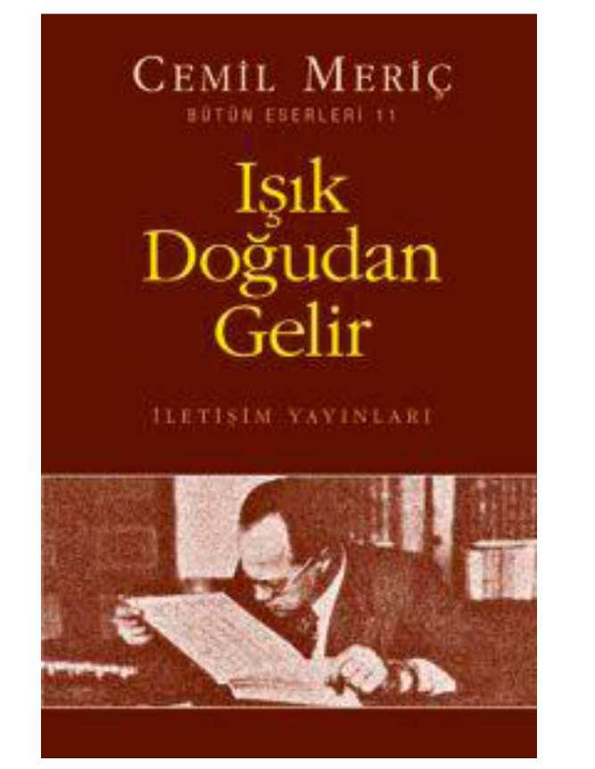

Dizgi-baski: Dizerkonca Matbaası
IŞIK DOĞUDAN GELİR
(EX ORİENTE LUX)
CEMİL MERİÇ
PINAR YAYİNLARİ
Beyazsaray, No: 31 Beyazıt/İstanbul Tel: 528 40 03
İÇİNDEKİLER
MEDENİYETLERİN DEFTER-İ ÂMÂÜ:
ANSİKLOPEDİLER 11
I — BATIDA ANSİKLOPEDİ 11
BÎR TÜRÜN TARİH ÖNCESİ 11
ZAMANIMIZ ANSİKLOPEDİDEN NE ANLIYOR ... 12
ONSEKİZİNCÎ ASIR ANSİKLOPEDİSİ YAHUT ... 13
ONDOKUZUNCU ASIRDA ANSİKLOPEDİ 24
YİRMİNCİ ASRA GELİNCE 26
II— İSLAMDA ANSİKLOPEDİ 31
İSLAM DÜNYASINDA YAZILAN TEK
ANSİKLOPEDİ: İHVAN-I SAFA RİSALELERİ 34
HÜSEYİN NASIR'IN ESERİNDE İHVAN-I SAFA 48
İSLAMIN KOZMOLOJİK DOKTRİNLERİ 66
VAHİY KARŞISINDA İNSAN VE KÂİNAT 73
MUHTEŞEM BİR ABİDE: DOĞU KÜTÜPHANESİ 82
BİBLE YAHUT KİTAB-I MUKADDES 87
KİTAB-I MUKADDES ÇEVİRİLERİ 88
BİBLE Mİ KİTAB-I MUKADDES Mİ 90
I — ESKİ AHÎD 94
TARİHÎ YAZILAR - 94
İBRANÎ DÎNİ; BACK GROUND
HAKİMLER KRALLAR DEVRİ 97
1) PENTATOK 101
PENTATOK ELEŞTİRİLERİNİN GELİŞMESİ ... 102
BELGELER TEORİSİ 103
YAHVECÎ GELENEK 104
ELOHACI GELENEK 103
DÎN ADAMLARININ GELENEĞİ 106
HUKUK VE TARİH 108
2) NEBİLER 106
3) ŞAİRANE VE HAKİMANE YAZILAR 109
4) APOKRÎFLER 110
H—YENİ AHÎD 113
1) İNCÎLLER 113
2) HAVARİLERİN İŞLERİ 115
3) RESULLERİN MEKTUPLARI 115
KANON VE METİNLER 116
1) ESKİ AHİD'DE KANON 117
a — Yahudi Kanon'u 117
b — Hristiyan Kanon'u 119
2) YENİ AHDİN KANON'U 122
Kanon ve Gelenek 122
Kabul Edilen Kitaplar 123
Tartışılan Kitaplar 124
EK I: KİTAB-I MUKADDES KANON'U 124
Bible'deki Kitaplar 126
Apokrifler 129
YeniAhid 129
Bible'e Alınmayan Değerli Kitaplar 131
Kitab-ı Mukaddes Cemiyetleri 131
EK H: KİTAB-I MUKADDES, KURAN VE BİLİM 132
NOTLAR 135
1) Kitab-ı Mukaddes 135
2) Bible'in Çevirileri 133
3) İbrani Edebiyatı 137
4) Hıristiyanlığın Menşeleri 141
EX ORİENTE LUX 144
I — İNSANLIĞIN KİTAB-I MUKADDESİ 143
H — DOĞU MABEDLERİ 14»
EX ORİENTE LUX 154
AMLMI CİNNET Mİ? 157
I — «CİNNETE METHİYE» 157
H — BATTYA GÖRE AKIL 163
m — İSLAM'A GÖRE AKIL 177
IV — İSLAM YAZARLARINDA AKIL 193
BATJDA VE DOĞUDA HERMETİK DÜŞÜNCE 202
I — HERMETİK KİTAPLAR 202
H — HERMEST>EN İDRİS'E 20»
HI — CABİR İBN HAYYAN VE İLM-İ SİMYA 214
İSLAMDA TERCÜME 220
İBN HALDUN VE 226
İbn Haldun ve Arap Dünyası 223
Bize Gelince 231
Avrupa'da ilk gerçek ansiklopedi ise Francis Bacon (1561-1626) dan sonra yayımlanabilmiştir. Neden? Çünkü ilimleri ilmî denebilecek bir sınıflamaya kavuşturan ilk filozof O'dur. Bacon'un tasnifi Almanya'da da, İngiltere'de de yankılar uyandırmış ama gerçek ifadesini Diderot ile D'Alembert'ia. şaheserinde, yani ünlü «Ansiklopedi»de bulmuş: XVIII. asır ansiklopedisi yahut sadece ansiklopedi.
ZAMANIMIZ ANSİKLOPEDİDEN NE ANLIYOR?
Batı kaynaklarına göre ansiklopedi (a) «bilgilerin bütünü
»... Müphem ve kaypak bir tarif. Hangi bilgilerin, nasıl bütünü? (b) «İlimlerin prensip ve neticelerini, belli bir metoda veya alfabe sırasına göre sergileyen eser». İlimler içinde dinler de felsefeler de yer almaz mı? İlimlerin prensip ve sonuçlan çağdan çağa, ülkeden ülkeye değişmez mi? Görüyoruz ki bu tarif de doyurucu olmaktan uzak. Yazarlar sıkışınca konuyu örneklerle aydınlatmağa çalışıyorlar. En sık başvurulan örnek de Diderot'nun Ansiklopedisi.
Ama kelimenin bir de geniş anlamı var). Bir ilmin, bir sanatın, veya belli bilgiler dizisinin bütün bölümlerini kucaklayan eser (İlimler ansiklopedisi, Roma hukuku ansiklopedisi, İslâm ansiklopedisi gibi...) Eskiden bu çeşit kitaplara kamus denirdi. Vapereau'
nun «Edebiyatlar Kamusu», Franck'm «Felsefi İlimler Kamusu
» v.s. Ansiklopedi, daha şatafatlı, daha cihanşümul, daha gösterişli olduğu için kamusun yerini aldı. Lûgatçiler, iki tür arasındaki farkı şöyle belirtiyorlar: «Ansiklopedi, kamusdan daha büyük ve daha eksiksizdir.» Garip bir iddia. Hangi ansiklopedi Larousse'un Avrupa irfanına armağan ettiği XLX. Asnn Büyük ve Üniversel Kamusu ile heybetçe boy ölçüşebilir... «Kamus, belli bir konu üzerinde mümkün olduğu kadar çok bilgi toplamakla yetinir, ansiklopedi ise, bu bilgileri, çeşitli İlimler ve sanatlar arasındaki iç münasebeti meydana çıkarmak ve onları rasyonel çer çevelere göre düzenlemek için, metodlu bir şekilde ele alır, daima bütünü gözetir, ayrıntıları temel prensiplere bağlayarak sergiler.»
ONSEKİZİNCİ ASIR ANSİKLOPEDİSİ YAHUT...
Evet... dünya ansiklopedilerinin «İdeal Typus»u bu âbide eser. Zamanımıza kadar bir çok rakipleri zuhur etmiş!
Daha büyükleri, daha yenileri, daha iddialıları. Ama hiçbiri unutturamamış onu. Geçen yüzyılın en ansiklopedik kafası Pierre Larousse, bu hakikati şöyle dile getirmiş:
«Nasıl bir zamanlar şehir denince akla Roma gelirse ve 1789 İhtüâlinin adı sadece İhtilâl ise Diderot'nun eseri de Ansiklopedi'dir.
... Cemiyeti dini tesamuh ve siyasî hürriyet istikametinde geliştirmek isteyen bütün müceddidler, bütün hürendiş
zekâlar, yeni prensipleri düsturlaştırmak, mazideki inançları yok etmek için el ele vermiş... bir asra, bir millete şeref verecek çapta bir eser... Matbaanın icadından beri girişilen en muazzam teşebbüs... Diderot, XVTII. asırda, düşüncenin Herkül'ü, Ansiklopedinin etrafında çöreklenen yılanlarla tam otuz yıl boğuşmuş... Selâm o ölümsüz esere: İlk defa olarak seyrettiğimiz Partenon'un, Sen-Piyer kilisesinin veya Notr-Dam'm önünde nasıl huşu'la eğilirsek, Ansiklopedi'nin önünde de aynı saygıyla eğilelim.»
Şimdi de o muhteşem binanın nasıl inşâ edildiğini anlatmağa çalışalım, önce baş mimar konuşsun. Diderot, 1750
de çalışan sınıflara şöyle diyordu, «Size bir âbide bırakıyorum.
İlmini yazıyorum hırfetlerin.» Üstad, endüstrinin harikulade istikbalini sezmiş gibidir. O güne kadar kölece bir emek sayılmıştı çalışma. Oysa medeniyet, refahını işçilere borçluydu. Tefekkürün âletleri onların eseriydi. Bu sayısız nesillerin destanı olacaktı ansiklopedi, kurban edilen ve hiçbir zaman tarihe geçmeyen nesillerin.
Ansiklopedi maddesinde de amacını şöyle anlatır Diderot*
«Ansiklopedinin amacı, dünya üzerine yayılmış bil gilari bir araya getirmek; bu bilgilerin umumî sistemini kendileriyle beraber yaşadığımız insanlara anlatmak ve bizden sonra gelecek nesillere aktarmaktır. îstedik ki geçen asırların çalışmaları gelecek asırlar için boşa gitmesin; torunlarımız kafaca gelişsin de daha faziletli, daha mutlu olsunlar. Biz de soyumuzun şükranım hak etmeden göçmeyelim...
Bir ansiklopedi yazmağa, ancak filozof bir asır girişebilirdi.
İdraklerin yozlaştığı çağlarda böyle 'bir yiğitliğe rastlanmaz...».
«Unutmamamız gereken bir hakikat da şu: düşünen ve temaşa eden varlığı yani insanı yer yüzünden kovarsak, o ulvi ve dokunaklı tabiat kasvetli ve dilsiz bir sahne olup çıkar. Kâinat susar, her tarafı sessizlik ve gece kaplar.
Geniş bir inzivagâha döner âlem. Şahidi kalmayan olaylar, karanlık ve sağır, geçip giderler. İnsan olmasa varlıkların ne değeri kalırdı... İnsan, kâinatta olduğu gibi, eserimizde de baş yeri işgal edecek. Mevcudatın ortak merkezi o değil mi? Kalkış noktamız da, varış noktamız da o olmalı. Kendi hayatımla benzerlerimin mutluluğunu düşünmeyeceksem, tabiattan bana ne?»
Diderot için, ilim demek insan demektir. Tabiatın sadece insanla ilgisi bakımından mânâsı ve değeri vardır. Ansiklopedide hâkim olan zihniyet: ilmî zihniyet, tecrübî zihniyet. Diderot için ilimlerin en mühimi fizyoloji idi Ömrünü, başından sonuna kadar, fizyoloji ile ahlâka adayacaktır.
Fizyoloji ile ahlâka yani insan bilgisinin iki kutbuna, o zamanın diliyle: bedeni, ruhu ve gönlüyle insana.
Hülasa edersek, ansiklopedi, bir topluluğun eseri.
Amaç, bilgilerin bilançosunu yapmak ve hazineyi gelecek nesillere aktararak maddi ve ruhî hayatın daha zengin, daha mutlu olmasını sağlamak.
Abidenin baş mimarı Diderot, ikinci mimar d'Alembert.
Fakat onlarla beraber çalışan yüzlerce kalfa var. Ansiklopedi, Rönesans'la başlayan uzun bir fikir mayalanışınm meyvesidir. İşaret etmiştik... kelimeyi Fransızcada ilk kullanan Rabelais (Pantagruel, bölüm XX). Gargantua, yalnız kanma bilmeyen bir bilgi aşkı duymakla kalmaz, Parisli artizanlann çalışmaları İle de İlgilenir. Nazari bilgi ile tatbikatı birbirine bağlamak ister. Ansiklopedisüerin de ayırıcı vasfı bu değil mi? Hümanistler de önce dünyada mutlu olmak peşindeydiler. Aynı bilgi yığma susuzluğu. Fakat Rönesansta üretim güçleri gelişmemişti henüz. Bunun içindir ki hümanistlerin bilgisi tatbikata açılamazdı. Düzensizdi, temellendirilmemişti, karışıktı. Bacon'ı beklemek lâzımdı (XVII. asır başlan). Bacon'ın gerçekleştirdiği terkip sayesinde zihin, bilginin bütününü kavrayabildi.
Onyedinci asırla onsekizin ilk yansında ansiklopedistlerin eserini hazırlayan üç nevi çalışma yaplımıştır.
1 — İnsan zekâsının gelişme tarihini tenkitçi bir bakışla anlatan terki b eserleri. Meselâ Alman papazı Brücker'
in Historia critica philosophiae'sı (1742-1744) ve bilhassa, Pierre Bayle'in Dictionaire Historique et Critique'i (1697).
2 — İlmi ve teknik bilgilerin dökümünü yapan kamuslar: Bilhassa Moreri'nin (1674) ve Thomas Corneille'in (I694)kiler, İngiltere'de Chambers'uı Cyclopaedia'sı (17281742
arası)).
3 — Sanat ve hırfetleri inceleyen çeşitli monografiler.
Colbert'den beri kralın hükümeti bu çalışmalarla ilgileniyordu.
İlimler Akademisi çok sayıda anketler yaptırmıştı.
1711'den beri büyük âlim Reaumur'ün başkanlığında yapılan bu geniş çalışmalardan, belli bir mesleği inceleyen ve estamplarla süslenen bir çok tasvir veya «precis»ler doğmuştu. Ne yazık ki bu araştırmalann hepsi basılmamışti; basılanlar da teferruatı kucaklamak için ifadeye fazla önem vermediklerinden okunmamışlardı.
Diderot ve arkadaşlan daha çok planş'larla estamplardan faydalandılar. Kaynaklandıktan, İlimler Akademisinin neşriyatı oldu. Akademinin sekreteri Fontenelle (1657 1737), altmış yıl, âlimlerin çahşmalannı aydınlık bir üslûpla hülâsa etmişti. Fontenelle, ansiklopedist üslûbun kurucusu; en çetrefil ilmi meseleleri vazıh ve sentetik bir tarzda anlatma işinde, Diderot ile D'Alembert'in hocası sayılabilir.
Onsekizinci asır, istihsal güçlerinin gelişme dönemidir.
Efkar-ı umumiye bunun farkındadır. İlmi keşiflerle bunların pıatik tatbikatına gittikçe daha büyük bir ilgi duyar.
Mason localarında, taşra Akademilerinde yeni yeni ihtiyaçlar belirir. Akademiler, hümanistlerin âlimâne çalışmaları yanında doğrudan doğruya faydalı araştırmalara da alâka duyarlar. İlmî topluluklarda, salonlarda, mevkutelerde hep aynı talebler. Hülâsa, onsekizinci asrın ortalarında Fransa'da, yetişmiş bir okuyucu kitlesi vardır, ansiklopedi teşebbüsünü desteklemeğe hazır bir kitle.
Britanica'da da şunları okuyoruz: «Ephraim Chambers, 1728'de Cyclopedia'sını yayımladı. Kitabın bir adı da: Sanat ve İlimlerin Üniversel Kamusu (iki büyük cilt.) Yazar, önsözde, daha önceki kamuslardan, bilhassa Fransız ve İtalyan akademilerinin sözlüklerinden, Furetiere'in, Trevoux'
nun, Chauvin'in, Harris'in kamuslarından geniş ölçüde faydalandığım anlatıyor; başlıktaki kelimelerden her birini ayrı ayrı tarif ediyordu: sanat, ilim, kamus... İlimler, akıl ve muhakeme yoluyla bulunmuştu. Sanatlar, ilimlerin hal ve şartlara göre ele alınan bölümleri idi. Bilgi sistemi 3 melekeye uygun olarak inşa edilmişti: İhsaslar (tabiat tarihi anatomi, kimya); muhayyele (gramer, belagat, şiir); akıl (fizik, metafizik, mantık, matematik, ziraat, resim, ticaret, el sanatları, siyaset ve hukuk). Bilgi, tabii ve ilmi (ilmî de duyulardan gelir yahut rasyoneldir); sunî ve teknik diye sınıflandırılmış ve sonunda 47 ilim ve sanat ortaya çıkmıştır.
Alfabe sırasıyla dizilen maddeler «bakınız» işaretleriyle birbirine bağlanır. Eserin tarihî veya biografik kamuslardan farkı, insan veya yer isimlerini almayışıdır. Meselâ Aristo'cu veya Aristo'cularla ilgili maddeler vardır da Aristo yoktur. 1751-52 lerde Londra'da 7 kere basılmış
Chambers. Yazar, 1739'da eserin Fransızca bir baskısını yapalım teklifini reddetmiş. Ama italyancaya çevrilmesine ses çıkarmamış (Venedik, 1748-49, 9 büyük cilt). İlk eksiksiz İtalyan ansiklopedisi.
Cyclopaedia'nm Fransızcaya tercümesi 1743'de başlayıp, 1745'de tamamlandı. Çevirenler bir İngiliz banka me muru John Milisle, profesyonel bir mütercim olan Alman G. Selluis idi. 1745'de tercüme, yayımcı Andre le Breton'a sunuldu. Basılması için kraldan ruhsat alındı. Bir prospektüs çıkarılıp 5 cilt (4 cilt metin, 1 cilt planş) halinde neşredileceği ilân edildi: Ansiklopedi yahut Sanat ve İlimlerini Üniversel Kamusu. Milisle kavga ettikten sonra le Breton onu uzaklaştırarak Sellius'la anlaşma yaptı. Eser 10 cilt olarak çıkarılacaktı (8 metin, 2 planş). Mills ingiltere'ye döndü, Sellius tercümeye devam etti. Yalnız Chambers*
den değil Harris'in Lexicon'undan da makaleler çeviriyordu.
Değişiklikler için biri 1746'da, biri 1748'de iki ruhsat daha alındı. 1745'de le Breton iki ortak daha almıştı: matematikçi D'Alembertle iktisatçı Malves. 1746 başlarında filozof Deniş Diderot da onlara katıldı ve 1747 Ekiminde Ansiklopedi'nin genel yönetimini üzerine aldı. Yalnız matematik bölümünü D'Alembert yönetecekti
Yazarlar, Chambers'dan yapılan tercümelerden yararlanacaklardı.
Ama bu tercümelerin büyük kısmı öylesine kötü, öylesine hatalar ve atlamalarla doluydu ki kullanılmadı.
1749 Temmuzunda Diderot, «Körler Üzerine Mektup»
başlıklı bir yazısından dolayı tutuklandı. 1750 Kasımında, 8 büyük sayfalık bir prospektüs yayımladı. Ansiklopedinin ilk cildi 1751 Temmuzunda, ikinci cildi 1752 Ocağında çık»
ti. Cizvitler, (Journal de Trevoux'da ve Dictionaire de Trevoux'nın yeni baskısında) prospektüsle iki cildi yaylım ateşine tuttular. Yazarlar hem hırsızlıkla suçlandı hem dinsizlikle...
Kiralın Devlet Şûrası, Ük iki cildi toplattı ve 1752
de müsveddelere el koymayı kararlaştırdı. Bereket XVI.
Louis'nin neşriyat müdürü Malesherbes, Diderot'yu zamanında uyardı ve müsveddeleri kendi evinde sakladı. Hükümet, esere devam edilmesi emrini verdi çünkü, teşebbüs millete mal olmuştu artık, Fransa'nın şerefi söz konusuydu.
Üçüncü cilt, 1753 Ekiminde çıktı. D'Alembert yazdığı önsözde gecikmenin sebebini anlatıyordu. Yılda bir cilt üzerinden yayıma devam edildi. Kasım 1757'de G harfini tamamlayan yedinci cilt çıkıncaya kadar işler böyle sürüp gitti. Yedinci ciltte D'Alembert'in «Cenevre» makalesi var di. Protestan keşişlerial, kafcoliklerin sahip olmadığı «Socinian
» faziletlerle mütehalli oldukları için övüyordu. Cenevrelileri medenileştirmek için bir tiyarto kurulmahydı.
Katolik papazları eleştiriye sinirlendiler. Protestan rahipleri
«biz Socinian değiliz» dediler. Ansiklopediye müzik maddesini yazmış bulunan Rousseau, «Tiyatro üzerine Mektup»unda (1758) tiyatronun her zaman ahlâk bozucu bir güç olduğunu ileri sürerek Diderot'ya çattı. D'Alembert 1758 Ocağında editörlükten çekildi. 1758'de Helvetius'un
«Ruh Hakkında» sı baştakileri öfkelendirdi. 1759'un şubatında yasaklanan tehlikeli kitaplar arasında Ansiklopedi de yer alıyordu. Dostları Diderot'ya «vazgeç bu işten, daha doğrusu kaç» diye İsrar ettiler. Aldırmadı. Nasılsa 10 cilt metin basılmıştı. Tabileri «zararsız» planş ciltlerini de yayımlamağa ikna etti. Diderot, 1764'de bir tesadüf eseri olarak
«Sarezen yahut Araplar» adlı makalesini gözden geçirdi.
Bir de ne görsün... Le Bretön ile mürettibi, Diderot'
nun son tashihlerinden sonra, ne olur ne olmaz diye bütün yazıları düzeltmemişler mi? Müsveddeler yok edilmiş. Metinleri eski haline getirmek mümkün değil. Ansiklopedinin son 10 cildi 1765'de tamamlanmıştı ve 1766'da dağıtıldı. İlk ciltleri 1782'de yayımlanan planşlar, 1772'de bitirilerek Ansiklopedi 28 cild'e baliğ oldu
D'Alembert, «Giriş Nutku»nda eserin iki amacı olduğunu söylüyor: Ansiklopedi olmak yani «insan bilgisinin topyekûn düzen ve teselsülünü anlatmak.» İlimlerin, sanatların ve mesleklerin tahlili bir kamusu» olmak. Yani «her İlmin veya her sanatın (ister liberal ister mekanik sanatlar söz konusu olsun) temeli olan umumi prensipler ve muhtevasını teşkil eden en mühim teferruatı» ortaya çıkarmak.
«Ansiklopedi ağacı» bilginin dallarını üç melekeye göre ayırır, Bacon gibi: hafıza, akıl, muhayyele. Nitekim, yazı dünyası da «ülkelere» bölünmüştür: Allameler: hafızaya dayanır; filozoflar: akla; sanatçılar ise: zevke hitap eder. Herhangi bir ilim veya sanatın ilk prensiplerinden en uzak neticelerine kadar bir «zincir» vasıtasıyla inilir veya aynı zincir yardımıyla neticelerden prensiplere çıkılır, ansiklopedik düzende... Bilginin kazanılmış seyrini gösteren tarihi düzen de bu ansiklopedik düzeni tamamlar.
Rönesansdan beri, önce Mimler ön plana geçmiş, sonra sanatkarlar, nihayet filozoflar.
D'Alembert, ansiklopedik düzeni Bacon'dan aldığını söyler, Diderot ise, herhalde intihal suçlamalarını cevaplandırmak için, ansiklopedi geniş ölçüde Bacon'm ilimler tasnifinden uzaklaşmıştır, der.
D'Alembert'e göre, kamus sanat veya ilmin her konu.
sunda bilgi edinmek isteyen kişilere faydalı olmabdur. Hem başkalarını aydınlatmak isteyenlerin işine yaramabdır, hem kendi bilgilerini arttırmak isteyenlerin.
Eser, hem tasan, hem de uygulayış bakımından daha evvelki ansiklopedilerin çok üstündedir. Meselâ başlıktaki
«sanatlar ve ilimler» programma «hırfetler» de eklenmiş.
D'Alembert «Giriş Nutku»nda, Diderot «Art» maddesinde, liberal sanatlarla mekanik sanatların birbirinden aynlmasını eleştirir ve mekanik sanatların ihmal edilişini kınar.
Chambers'e yöneltilen bellibaşlı tenkitlerden biri de şu: hazret kitaplan okumuş ama işyerlerine uğramamıştı.
Zedler de faydalı sanatlardan söz ettiği halde tasviyeye şayan bulunmaz. Diderot, hem felsefenin hem de hirfetlerle ilgili makalelerin sorumluluğunu yüklenmiştir. Yazılan müşahedeye ve tecrübeye dayanır. Başlıkta kaydedilen bir başka yenilik de yazılann bir «edebiyatçılar topluluğu» tarafından hazırlanmış olması. Bu da bir gelişme ifade eder.
İlk ansiklopediler, fertler tarafından hazırlanmıştı.
Gerçi Diderot İle D'Alembert'in çevrelerine topladıklan kişiler önceleri, Rousseau ile baron d'Holbach bir yana, pek öyle tanınmış kimseler değildi. Ama bir yandan Ansiklopedinin ünü, bir yandan da hücumlar arttıkça seçkin ve selâbiyetli yazarlar akın etmeğe başladı. Dördüncü ciltde: Turgot, Duclos, Bordeu... Beşincide Voltaire, Marmontel, Forbonnais, Deleyre; altıncıda De Brosses, Saint Lambert, Morellet, Necker, Quesnay görünür. «Edebiyatçılar topluluğu» boş bir söz değildir artık.
Ansiklopedi'nin yazarlan tek felsefe üzerinde durmaz.
lar. Bacon'ın ilimler şeması, Lorike'un felsefesine ve Newton'un ilmine uydurulmuş, Locke'uıı insan müdrikesi ile ilgili tahlilleri Gassendi'nin Epikûrcû Atomizmi ile Bayie'
in septisizmi arasında yeralmıştır. Felsefe ve dine ait makaleler
—bilhassa Le Breton'un makaslamalarından sonra—
ne orijinaldirler ne çarpıcı. Ansiklopedinin felsefesi, tesamuh ve liberalizm; pratik hedefleri olan bir felsefe.
Belli bir zihniyetin ve belli emellerin ifadesi olarak geniş
ölçüde yayılmış ve devrimci etkileri olmuştur.
Charles Joseph Panckoucke (1736-98) «Ansiklopediyi yayımlayanlara 1761'lerde eserin yeni bir başkasını yapmağı teklif etti ve ilk yedi cildin planşlannı satın aldı. Diderot,
«tashih edilmiş yeni bir baskıya ihtiyaç yok» deyince, eski ciltlerin tekrar basılmasına girişildi. Üç cild çıktı ve 1770'de hükümet tarafından toplatıldı. Panckoucke 1775
de (dördü metin, biri planş olmak üzere) beş ciltlik bir ek çıkardı ansiklopediye (Paris, 1776-77). Sonra bunlara Pierre Mouchon'un hazırladığı 2 cild endeks de ilâve edildi (Amsterdam 1780). Diderot'nun başkanlığında hazırlanan 28 cilde bu 7 cilt de eklenince ansiklopedinin 35 ciltlik ilk baskısı ortaya çıkmış oldu (1751-80).»
Büyük yankılar uyandırdı Ansiklopedi. Yalnız Fransa*
da değil, İsviçre ve İtalya'da da taklid edildi. Kısmen İngüizceye ve Busçaya çevrildi. Ansiklopedideki ilmî makalelerin bugün yalnız ilimler tarihi bakımından değeri vardır.
Yazarlarının en cesurları bile, felsefe alanında mekanist bir materyalizmi aşamamıştır; metafiziği mahkûm ettiği halde metafizik kalan ve tarihin ilmî izahına ulaşamıyan bir materyalizm. Bununla beraber, eser, tezadlanna, Fransa'da iktidarın denetimi altında çıkan bir eserin göstermek zorunda olduğu ihtiyatkârlığa rağmen, Fransız rasyonalizm tarihinde hâlâ büyük bir âbidedir. Diderot, kitapçılar yüzünden, Ansiklopedinin istediği gibi çıkmadığına çok üzülüyordu. Yine de eserde birlik yaratabildi: Metot ve doktrin birliği. Bütün ciltlerden, ilme, terakkiye bir neşide yükselir, aklın değerine iman eden bir neşide. Gelenekler, her alanda, tecrübenin ve rasyonel tenkidin dene timinden geçirilir. Peşin hükümlere dikkat çekilir. Dünyevi mutluluk yolunda ilerlemeyi güçleştiren her engel yıkılır.
Ansiklopedi bir edebi eserdir de. Kelimeler üzerinde büyük bir çalışmaya girişmiş, mefhumları yeni baştan tarif etmiştir. Dil, yeni bir düzene kavuşturulmadıkça düşünce de yenileşemezdi. «Bütün ümidlerimizin temeli: dil. O
istikrara kavuşmaz ve gelecek nesillere bütün kemâliyle aktanlamazsa, yazdıklarımızın yarınından nasıl emin olabiliriz?
» (Diderot).
Ansiklopedi, bugün de, yazarlarının sayısı ve değeri, giriştikleri kavganın güçlüğü, konusunun genişliği, kucak.
ladığı görüşlerin çeşitliliği ve bu görüşlerin altındaki düşünce birliği ile Aydınlıklar Çağı felsefesinin en heybetli abidesidir. ',:%..
Ansiklopedi'de önce ilmî fetihlerin bir bilançosu var.
Yazarlar arasında büyük uzmanlar yer ahyor. D'Alembert, matematik ve fizikle ilgili bütün konuları yönetmiş, Diderot daha çok tabiat iUmlerini... Yazıların değeri ilimden ilme değişiyor, ama hepsinde ağır basan aynı zihniyet. Makaleler ilmin o günkü durumunu anlatmakla kalmıyor, tarihlerini de ele ahyor. Böylece insan zekâsının gelişmesine de ışık serpmiş oluyor.
Sanatların tasvirini- canlandıran: aynı terakki endişesi.
Diderot'nun amacı, çeşitli sanatları, kendi meslekleri içine kapanan uzmanlara tanıtmak, onların başka tekniklerle temasa geçmelerini sağlamak, benzerliklerden yararlanmalarına imkân hazırlamaktı. Böylece üretim güçlerinin gelişmesine yardımcı olacaktı... Belki bu muradına erişemedi Diderot. Ama yazı arkadaşlarına bir metod ve üslüb birliği kabul ettirebildi ve anlaşılır bir dil yaratarak tekniklerin uçsuz bucaksız dünyasına aydınlık getirdi Ne var ki Ansiklopedinin tarih nazarında asıl değeri, felsefi muhtevasından gelir. Evet, Le Breton bir çok yazıyı sakatlamış, ama felsefe yalnız Diderot'nun felsefe tarihiyle ilgili makalelerine inhisar etmez. Ona, aşağı yukarı eserin her yanında, hiç beklemediğiniz yerlerde rastlarsı fîzyolojist olarak ele alırlar, soyumuzun başlangıcı konusunda kılavuzları Buffon'dur, bununla beraber belli bir antro.
polojik doktrinin de kurucusudurlar, Kitab-ı Mukaddes geleneğinin yerine geçecek bir doktrin. İnceledikleri insan tabiattaki insandır, cihanşümul özüyle, hayvanlar zümresinden bir varlık. O da bütün kâinat gibi belli kanunlara bağlıdır.
Ansiklopedistler, içtimai mukavele ' faraziyesine de, ilahiyatçıların tabiat üstü izahlarına da iltifat etmezler.
Toplumlar tabiî insanın ihtiyaçlarından doğmuştur, beşeri ihtiyaçları karşılamak için özel mülkiyet, teminat altına alınmalıdır. Fertler belli bir refah seviyesine getirilmeli ve hür olmalıdırlar. Ansiklopedistlerin ahlâkî, doktrinleri daha çok faydacıdır (utilitarien). Toplum kurulduktan sonra, ortak irade, ferdî iradelerin yerine geçer. Ahlâkî faziletlerin başında, sosyal mahiyettekiler gelir: tesamuh, çalışkanlık, adalet duygusu ve insanseverlik. Hepsi de istibdata ve imtiyazlara düşmandır, idealleri: münevver despotizmi.
Filozoflar fikirlerini diledikleri gibi yayabilmeli; ülkenn temel kanunlarına saygı gösteren, bilhassa çalışan sınıfların refahını gözeten anlayışlı bîr hükümet kurulmalıdır.
Ansiklopedide, Quesnay fizyokrasisinin ilk kanat çırpınışlarını buluruz. Yazarların hepsi de mali reformlardan yanadırlar. Tavsiye ettikleri çare altın çağa dönmektir, IV. Henri ile Sully'nin altın çağma. Daha mühim olan bir davranışları da endüstri davasını savunmalarıdır. İnsanoğlunun maddî ve manevi gelişmesi, ticaret ve sanayi alanıdır, diyen Ansiklopedi, ticaret ve sanayi ile uğraşan sınıfların iktidara yükselmesine zemin hazırlar.
Ansiklopedistler devrim peşinde değildirler ama yine de burjuva sınıfının şuurlanmasına yardım etmişlerdir, devrimi yapacak olan burjuva sınıfının. Tavsiye ettikleri pratik ıslahat, eski rejimin çerçevesi içinde de pekâlâ gerçekleşebilirdi.
Nitekim, anayasanın tespiti, ferdî hürriyetlerin teminat altına alınması, devletin ilimleri ve sanatları koruması, ceza kanununun ıslahı, imtiyazların kısıtlanma*
sı idare cihazının ve bilhassa maliyenin ıslahı... 1789 Ko rucu Meclisinin programı olacaktır.
Tasavvur, plan ve tatbikat bakımından 18. asrın hâkim düşüncesini temsil eder Ansiklopedi. Soyumuz, bilginin yayılması ve akıl sayesinde gelişebilir ancak. Aydınlıklar felsefesinin Fransa'da ulaşabildiği en kâmil ve en kucaklayıcı ifade. Ansiklopedi onsekizinci asırda Fransız kamu oyunu şekillendirmiş, filozofların dağınık güçlerini bir araya toplamıştır. Kaldı ki sadece ilmî bakımdan da değeri büyüktür. İlk defa olarak insan bilgisinin pozitif bir terkibini yapmış, maddî ilimlerin objektif ve tecrübî özünü ortaya çıkararak, müstakbel araştırmaların ve düşüncelerin malzemesini hazırlamıştır. Ansiklopedi'de, hem Turgot ile Condorcet'ye atfedilen terakki doktrininin, hem de Saint-Simon'la Comte'un kuracağı pozitif sistemin köklerini bulabiliriz. (Rene Hubert in Encyclopedia of the Social Sciences, (İçtimaî İlimler Ansiklopedisi) «Ansiklopedistler
» maddesi.)
ONDOKUZUNCU ASIRDA ANSİKLOPEDİ
Elbetteki Diderot'nun şaheseri ile ansiklopedi neşriyatı sona ermez Avrupa'da. Diderot'nun ölümünden sonra, Pankoucke, Ansiklopedi'nin muhtevasını genişletir, alfabetik sıralamadan vazgeçerek, konulara göre tasnif eder ve ansiklopediyi 152 büyük cild halinde yayımlar.
Pierre Larousse, Avrupa'ya, ünlü Kâmus'unu armağan eder (15 büyük cild, 1865-1876, ikiAek 1877-1888). Batı irfanının en büyük, en ihtişamlı demirbaş defteri...
Asrımızın başlarında, çağımız insanının bugünkü İhtiyacını karşılamak için resimli bir Larousse lügati yayımlanır (7 cild, 1896-1904. 1 ek). Sonra Yirminci Asır Larousse'u (altı cild, 1928-1933, 1 ek). Nihayet Büyük Larousse (10 cild, 1 ek).
çabalarına katkıda bulunmaktır. Okuyucuya, bu olay doğrudur, bu olay şüphelidir, bu iddia tartışma konusudur, demek suretiyle olayların genel akışını hızlandırmış olmaz mıyız? Mukayese etmek, hüküm vermek, seçim yapmak okuyucuya düşer».
Önsöz, devam ediyor: «Ansiklopedilerin kaderi, fani olmaktır. Yirmi beş yıl içinde insan ilimleri gelişecek, ya"
hut yeniden değerlendirilecektir. Yeni olaylar çıkacaktır su yüzüne. Eski nazariyeler ölecek, yerlerine tazeleri geçecektir.
Aynı kelimeler, otuz kırk yıl içinde, bambaşka mânâlar ifade edecektir. Bütün bu değişiklikleri sergilemek için yeni ansiklopedilere ihtiyaç olacaktır. Bununla beraber, ansiklopediler yaprak gibi dökülmezler. Dünü yazına bağlayan zincirin vazgeçilmez birer halkasıdırlar. Her ansiklopedi, insan zekâsının belli bir merhalesini ifade eder.»
Büyük Ansiklopedi, Fransa'nın çeşitli ilim ve düşünce adamlarını bir araya getirmiş ve ondokuzuncu asır sonrasının tereddüt ve arayışlarını bütün buutları ile sergilemiştir.
Diderot'nun eseri kadar uzun ömürlü olamamıştır.
Çünkü onsekizinci asır, Avrupa'yı kuracak olan cihangir bir sınıfın fetihlerini sergiler. Bir yükseliş çağının meyvesidir.
Ondokuzun sonlarına doğru burjuvazi ihtiyarlamıştır.
Büyük Ansiklopedi bu ihtiyarlıyan sınıfın mirası, yâni bir çeşit vasiyetnamedir. Yazarlarında Diderot neslinin genç imanından eser yoktur. Seyrettiğimiz sarhoş ve çü"
gın bir fecir değil, şâ'şalı bir guruptur.
YİRMİNCİ ASRA GELİNCE
Birinci dünya savaşından sonra, Fransa yeni bir doğuşun arifesinde olduğunu isbat etmek ihtiyacını duymuş ve mânevi fetihlerinin yeni bir dökümünü sunmağa kalkmıştır.
Fransız Ansiklopedisi, 1935'lerde A. de Monzie tarafından kurulmuş, Lucien Febvre tarafından yönetilmiş.
daha sonra Gaston Berger tafafmdan devam ettirilmiştir.
1962'de tamamlanan bu bilgi ve düşünce hazinesi yirmi dittir.
Lücien Febvre, ilk cildi şu sorularla açıyor: «Neden ve nasıl foir Fransız Ansiklopedisi?... Verdiği cevaba bir göz atalım.
«1932 Ağustosu... Nice'deki bir kongrede, ilk Fransız milli eğitim bakanı', bir 'Fransız ansiklopedisi' fikrini ortaya atıyor. Bir millî eğitim eseri olacaktı bu, en mühim milli eğitim eseri. Şubat 1934'deyiz. Tohum yeşerdi, bitki topraktan fışkırdı, yakında dallı budaklı bir ağaç olacak: Akdeniz kıyılarının zeytini, yahut Atlantik sahillerinin meşesi.
Do Monzie, ansiklopedinin devlet hazinesi tarafından beslenmesini istememişti, onun için eseri bir vakfa havale etti: Fransız Ansiklopedisi Komitesi. Her türlü siyasi ve ticari etkinin dışında kalacaktı komite. Eser, bağışlara, gönüllü katkılara, sonra da abonelere dayanacaktı. İşi yönetmek için, ilmin, sanayiin, idarenin, üniversitenin tanınmış
kişilerinden bir heyet kuruldu. Teşebbüsün plânını çizmek, yürütülmesini denetlemek, herkesin ahenk içide çalışmasini sağlamak için bir genel sekreterle birkaç yardımcı bulundu.
Ansiklopedi'nin amacı neydi? Büyük bir edebiyatlar, ilimler ve sanatlar kamusu olmak. Akla ilk gelen formül buydu. Gerçekten de bu çeşit kitaplara ihtiyaç vardı. İngiltere, iki yılda, Britannica Ansiklopedisi'nin 14 üncü baskısını 24 cild olarak yayımlamıştı. Faşist İtalya bol resimli İtalyan Ansiklopedisi'ni yayımlıyordu. İspanya 70 cildlik ansiklopedisinin eklerini neşrediyordu. Büyük Brockhaus onbeşinci baskısını yapıyordu. Sovyet Rusya büyük bir ansiklopedi çıkarıyordu.
Biz de bütün bu güzel örneklere bakarak Fransız Ansiklopedisinin büyük bir kamus olmasını istemedik Evet, bilgi vermek ve öğretmek, ansiklopedinin amacı. Ama ansiklopedi,
«eser» de olmak iddiasındadır. Eser demek, ruh demek Bu ruh bir parti zihniyeti değildir elbette. Ansiklopedi siyasi, felsefî, dogmatik hiç bir inancın hizmetinde olmıyacakür. Fransızdır o, yalnız kökleri ve meseleleri ele alışı ile değil, cihanşümul olmak endişesi ile de Fransız.
Başka milletlere, başka fikirlere, başka düşünme ve duy ma tarzlarına sonsuz bir tecessüs beslemektedir. Dışarı dan gelecek işbirliğine ve katkılara açık, bütün ülkelerin uzmanlarına elini uzatıyor.
Yunanca ansiklopedi kelimesini, kendi üzerine kapanan eksiksiz bir ufuk taraması tâbiri ile karşılıyabiliriz.
Böyle bir çalışmanın merkezi, ne ırk, ne devlet, ne de sınıftır.
İnsanın kendisidir bu merkez. Bir Fransız ansiklopedisi, hümanist olmalıdır.
Çapraşık, bilgiççe ve dogmatik bir planımız yok. Binbir güçlükle en kolay yolu bulmağa çalıştık. Fransız Ansiklopedisinin kalkış noktası insan toplumlarıdır. İlkel top.
lumlar üzerinde fazla durmadık. Zira homo sapiens homo faberden ayrılmamıştır henüz. Medeni toplumlara gelince, onların amacı nedir? Bir yandan öğrenmek ve tanımak, bir yandan da elde ettikleri bilgilere dayanarak refahlarını sağlamak, geliştirmek, tabiat güçlerini idareye devam etmek.
Bugünün bütün beşerî faaliyetlerini bu iki amaç etrafında toplayabiliriz. Bilmek ve tanımak, ama nasıl?
«Zihin Aletleri», cildimizin konusu bu (Cild 1): mantıki düşünce, dil ve ilmin dili olan matematik.»
Sonra, Febvre, hazırlanmakta olan ansiklopedinin her cildinin konusunu bir bir anlatıyor.
De Monzie ise, Ansiklopedinin giriş yazısmda, emellerini şöyle dile getiriyor: «Devletler hesaplarını kapatırlar, maddî hesaplarını. Ama onunla beraber maddî demirbaşların manevî dökümlerle tamamlanması lüzumlu imiş gibi, milletler —daha doğrusu milletlerin içindeki seçkinler—
büyük bilgi sentezlerine girişirler. Eski fetihleri tazeleyen bu teşebbüs ünlü bir lafızla karşılanıyor: ansiklopedi. Biz Fransız insanları da yeni baştan bir Ansiklopedi kurmak istiyoruz. Evet, ansiklopedi, abc sırasına göre düzenlenmiş
bir ilimler kamusu değildir. İnsanların yüzyıllar boyu etkilediği, isimlendirdiği, sınıfladığı, tahlil ettiği, yarattığı her şeyi kucaklamaz. Bilgi susuzluğunu gidermek için ha zırlanmış, her günkü müracaat kitaplarımızda onbinlercesini bulduğumuz hal tercümeleri ile dolu ve yanlarında tabiiyeci nesillerinin kataloga geçirdiği onbinlerce cisim, nebat ve hayvan isimlerinin sıralandığı bir kamus değil.
dir. Okuyucuya herşeyl hatırlatmak istemiyoruz. Bir partere başka yerlerden devşirilmiş çimenleri diker gibi yüzlerce eseri tek kitaba doldurmak niyetimiz yok. Fransa'da kamus dilediğiniz kadar bol. Dizi dizi el kitabı ve koleksiyonlar da caba. Çoğu da mükemmel. Yapılanı yeniden yapmak lüzumsuz. Mühim olan: zihniyet. Zekânın ilerleyişini o düzenliyor. Bu ne bir parti, ne bir fetih zihniyeti. Hiç bir peşin hükme iltifat etmiyoruz. Hiç bir doktrini kabule zorlamıyoruz kimseyi. Hattâ teklif ettiğimiz her hangi bir doktrin de yok. Nereden gelirlerse gelsinler, kim olurlarsa olsunlar, hâlâ hakikate inanan herkesi yanımıza çağırıyoruz.
«İnsanlığın mânevi demirbaşına tarafsız bir gözle eğilmek zorundayız.
«Ansiklopedilerden bu yana, böyle bir çalışmanın şartları değişti.. İlmin gelişmesi, dağınık nizam içinde gerçek, leşti. Toplumlarımız, işleri de görevleri de, bölmek zorunda.
İhtisaslar buradan doğuyor. Espinas, «bölmek, dağıtmaktır
» diyordu. İlimler öylesine gelişti ki bütün araştır, malan tek kanunla açıklayamıyoruz artık. Artık hiç bir felsefe ilmin maşerî vicdanı olmak şansına sahip değildir.
Bütün çabalar boşuna. Matematik, fizik ve kimya, biyoloji, moral veya sosyal ilimlerin hepsini ortak bir amaç uğrunda seferber edemiyoruz. Demek ki idrâkin konusu olan bilgileri bir mertebeler dizisine veya mantıkî bir teselsüle göre tasnif edemiyoruz. O halde tabii düzene uymak lâzım gelmez mi?
Auguste Comte gibi konuşursak, amacımız: objektif bir sentez değil, sübjektif bir sentezdir. Başka bir deyişle, bir demirbaş tesbit edeceksek, bu demirbaştan faydalanacak olan: insanlık. Diderot da öyle düşünmüyor muydu?
«Kâinatta insanın yeri ne ise, eserimizde de o olmalıdır her şeyin ortak noktası.» Soyut insanı, genel insanı değil, yaşadığımız çağın İnsanını ele alacağız. Kanlı bir buhra nın ferdâsındayız, bu günkü nesli, entelektüel şuurunu muayene etmeğe çağırıyoruz. Pozitif 'bilgiler, aksiyon vası taları, hem maddeye hem de kendi kendine söz geçirmek için çırpınan bir zekânın aydınlıkları, —bir kelime ile—
kucağında geliştiği çilelerden eşsiz bir güç kazanan bir dünyanın tasavvuruna ait unsurlardır.
Kitaplarda, çalışan insanların izlerini arazız. İzlerini ve derslerini.
Böyle bir düzene uymak istiyoruz. Çünkü muhatabımız mutlu bir azınlık değil, geniş kalabalıklardır. En vasıflı kimselerin fetihlerini çoğunluğa sunmak istiyoruz.
Cildlerimiz şu veya bu ilmin, şu veya bu sanatın veya mesleğin adını taşımıyacak. Ortalama bir tecessüsün rasyonel gelişmesi üe birbirine bağlanan bir problemler grubunu kucaklıyacak Tasavvurumuz şu: Bir bilgi ve aksiyon aleti inşa etmek, tarafsız bir sentezi dürüst tahlillere dayatmak, ilmin bu güne kadar güç ve ümid olarak top.
ladığı ne varsa, —mümkün olduğu kadar geniş bir biçimde—
insanlığın ortak malı haline getirmek. Teşebbüsümüze ansiklopedi adını verdik Bu isimle hem bir temayülü belirtmek istiyoruz, hem de ilham aldığımız tarihi örnekleri.
Bergson, «yeniyi —ancak— eskinin yerini aldığı ölçüde kavnyabiliriz» diyor. Biz de cesaret ve sorumluluğumuzun şuuru İçinde böyle bir işe kalkışıyoruz.»
n — İSLÂM'DA ANSİKLOPEDİ
Onsekizinci Asır Ansiklopedisi üzerinde çok durduk.
Çünkü dünya saltanatına göz diken cihangir bir sınıf, insanlığın bilgi mirasım bütün ayrıntıları ile elden geçir.
miş; inançları, felsefeleri, ilimleri bir bir sigaya çekmiş, ümidlerini, iştiyaklarını ve fetihlerini otuz beş büyük cild halinde abideleştirmiştir. Bir neslin imzasını taşıyan o muhteşem eser hem korkunç bir kavga silahıdır hem de sesini asırlara duyuracak zekaların hitabet kürsüsü. Ansiklopedi onsekizinci asrın sonlarından beri Avrupa intellijansiyasının bayrak kelimelerinden biridir. Büyük küçük her millet, hattâ her camia manevî hazinesini bir ansiklopedi ile sergilemek sevdasındadır artık. Bununla beraber, sayısız rakiplerine rağmen, Diderot ile D'Alembert'in baş
mimarlığım yaptığı onsekizinci asır ansiklopedisi hâlâ eşsiz bir öncü olmak imtiyazım kaybetmemiştir. Çünkü yalnız akim değil* gönlün de eseridir. Teknikler, hayali fer.
sah fersah geride bırakan bir hızla ilerlemiş, ilimler boyuna yeni fetihlerle zenginleşmiş... ama yine de iki asırdan çok bir zaman önce inşa edilen o heybetli eser bir ehram selabeti ile dimdik ve diprirl çağımız insanına meydan okumaktadır. Çünkü tarihin tek yapıcı ve yıkıcı içtimai sınıfı yerini henüz bir başka sınıfa bırakmamıştır. Ansiklopedi, Avrupa'yı Avrupa yapan bu zinde sınıfın kahramanlık çağında yükselttiği bir şaheserdir. Onun bütün gücünü, bütün kabiliyetini remizleştirir. Konusu ise, ebediyen taze kalacak olan insandır.
Ansiklopedi lafzının günümüzde kazandığı büyük itibar bir parça da bu tarihi hâtıranın bakiyyesi. Her yaym
• evi rastgele konulan kucaklıyan büyücek bir kitabı ansiklopedi diye damgalıyor: seks ansiklopedisi, gençlik ansiklopedisi, oyun ansiklopedisi...
Bize göre, her insan camiası, her medeniyet, ancak tek ansiklopedi kurabilir. Sütunlar aşınsa da, duvarlar çatlasa da, zamanın tahrip gücü temellere dokunamaz. Ansiklopedi bir asrın, bir milletin bir neslin ve bir dâhinin eseri olamaz. Almanların, çeşitli lexiconlari; İngilizlerin ünlü Britannica'si; faşist İtalya'nın, Sovyet Rusya'nın heybetli ansiklopedileri, Onsekizinci Asır Ansiklopedisi'nin soluk birer nüshasından yani birer suretinden ibaret. Zira Avrupa medeniyeti tektir. Ve kendini bastan başa yenilememiştir.
Cihana hâkim olan içtimai sınıf da onsekizinci asırdan beri hep aynı sınıf, yâni burjuvazidir.
İslâm medeniyeti de yekpare bir bütün. İslâm dünyası, Hicret'den bu yana çeşitli ikbal ve idbâr devirleri yaşamış, fakat aslî cevherini büyük bir titizlikle korumuştur.
Bu medeniyetin dayandığı mukaddes kitaplar, milyonlarca insanın yoluna ışık serpmiş ve serpmektedir, lalamın «Muhit ül Maarif »i: Kur'an-ı Kerim ile Hadîs-i Şeriflerdir.
Evet, İslâm'da sayısız kamuslar, sayısız ansiklopedik eserler mevcud. El Harizmî'nin «Mefatih-il ulûm» undan Taşköprülüzâde'nin «Mevzuat-ül ulûm»una, Fârâbî'nin
«Ihsa ül ulûm'undan Kâtip Çelebi'nin «Keşfüzzunun •una.
Erzurumlu İbrahim Hakkı'nın «Marifetnâmesi»nden Şemsettim Sami'nin «Kamus ül âlâm»ma kadar yüzlerce eser.
Fakat bunlardan hiç biri modern mânâda bütün bir ansiklopedi sayılamaz.
Sözü, tarafsız bir ilim adamına, daha doğrusu düşman bir medeniyetin ünlü bir ansiklopedisine (Britannica) bırakalım...
«Yunan felsefesiyle İslâmiyet! uzlaştırmak isteyen İslâm filozofları çalışmalarında ansiklopedik olmağa yöneldiler.
Al-Farabi (870-950) nin «İlimler Katoloğu» (İhsa-ül Ulûm), orta-çağlar boyunca «İlimler üzerine» yahut «llim lerin menşeî» adıyla Latinceye çevrilmiş ve geniş bir okuyucu kitlesi bulmuştur. Kitap, ilimleri 8 başlıkta incelen (1) Lisaniyat; (2) Mantık (belagat ve şiir sanatı dahil); (3) Riyaziyat (mebhas-ı Ziya, ilm-i nücum, musiki, cerri eşkal, mihanik dahil); (4) Fizik (meteoroloji, nebatat, hayvanat, ruhiyat dahil); (5) maba'd-ittabiiye; (6) siyaset; (7) Fıkıh; (8) Kelâm (Skolastik ilahiyat yahut münazara).
Mesudî'nin «Altın Çayırlar» yahut «Kıymetli Taşlar Ocağı
» (947) bir tarih-coğrafya ansiklopedisi. İhvan-ıSaf a topluluğu da Onuncu Asır'da 52 risale halinde bir ansiklopedi hazırladı. Kitap 3 büyük başlığa ayrılmıştı: (1) terbiyevî ilimler (sarf-u-nahiv, hesap, kehanet, sihir, sanatlar, ticaret)
; (2) fikrî ilimler; (3) felsefî ilimler (bunlar da riyazi, mantıkî, tabiî ve ilâhî ilimlere ayrılır).
İranlı ansiklopedist Al-Harizmî «Mefatih41-Ulm» (976) unda ilimleri ikiye ayırır: 1) dinî hukuk ilimleri; 2) yabancı ilimler yahut felsefe. Dinî hukuk ilimleri: fıkıh, kelâm, sarf-u-nahiv, kitabet sanatları, aruz, tarih. Yabancı ilimler de ikiye ayrılır: 1) nazarî ilimler (fizik, riyazat, ilahiyat), 2) amelî ilimler (ahlâk, iktisat, siyaset).
îbnün Nedim'in «Fihrist» i (987-988) da 10 bölümdür: lisaniyat, edebiyat, tarihî ilimler, kelâm, fıkıh, felsefi ilimler (riyaziyat, tababet, mühendislik dahil), sihir ve efsane, mezhep ve dinler ve simya.
îbn Sina'nın «Eşşifa»sı felsefî ansiklopedisinin en çok bilinen kısmı. Al-Gazali'nin (1058-1111) «İhya-ı ulum ve din»i, ilimleri dinî ve din-dışı olarak ayırır. Kelâm ve felsefe (riyazat, mantık, tabiî ilahiyat ve tabiî ilimler) bu iki gruba da girmez. îbn Rüşd (1126-1198) tıbbî bir ansiklopedinin yazarıdır. Aristo'nun eserleri üzerine şerhleri de geniş bir felsefe ansiklopedisi teşkil eder. îbn Haldun"
un (1332-1406) «Mukaddime»si ansiklopedik bir sosyoloji ve tarih felsefesidir. İlimlerin tasnifini yapar ve tarihlerine temas eder.»
İSLÂM DÜNYASINDA YAZILAN TEK ANSİKLOPEDİ»
İHVAN-I SAFA RİSALELERİ:
İhvan-ı Safa risaleleri üzerinde ibiraz durmak istiyoruz.
Zira İslâm dünyasında hem felsefî bir görüşe dayanan hem de zamanm bütün ilimlerini kucaklayan tek ansiklopedi İhvan-ı Safa risaleleridir. îslâmda ansiklopedik eserler sayılamayacak kadar bol, fakat mazbut ve gerçek bir ansiklopedinin tek örneği, onuncu yüzyılda kaleme alınan bu garip eser. Konu üzerinde ısrar edişimizin bir başka sebebi de ilim adamlarımızın şaşılacak kayıtsızlığı. Filhakika ehli sünnet vel cemaat uleması, kaynaklan oldukça bulanık olan bu «muhit-ül-maarife»e temas etmeden geçmeyi maslahata daha uygun bulmuşlardır. Avrupa da geç tanımıştır bu risaleleri. Uzun zaman «Asya Cemiyeti»nin sekreterliğini yapan allâme Jules Mohl, Steiner*in bir kitabını vesile ederek ondokuzuncu asır oriyantalizminin ortak kanaatına tercüman oluyor:
«Araplarda ilim bir çok çalışmaların konusu olmuştur.
Hicret'in ikinci asrından itibaren sünnîlerin bir kat daha abarttıkları kaza ve kader inancı bir çok muarızlar buluf karşısında,: ahlâk duygusunu isyan ettiren bir nas'dı bu. -
Yunan mekteplerinin etkisi yaygmlaşınca, Allah'ın vasıfları, hilkatin mahiyeti ve ahiret hakkında da itirazlar yükselmeye başladı. Kur'an felsefenin icaplarına göre yorumlanmaya, harfi tefsirlere karşı aklın ve ahlâkın hakları korunmağa çalışıldı, bilhassa Memun'un hilafeti devrinde bu yeni görüşler öylesine hâkimdiler ki başka düşünceleri susturmağa kalkıştılar. Yazık ki mücedditler Aristocuların cedel usullerini benimsemişlerdi, önce bu metodla hasımlarını hapt ettiler fakat hasımları da aym silâhlarla karşı koyunca münazara medrese kavgasına dönüştü.
Bu çekişmelerden hiçbir şey anlamayan kalabalık, tartışmalara kulak asmaz oldu. Nas da daha düzenli bir müdafaaya kavuşarak güçlendi El-Eş'ari, naşı cedelle zırhlandırdı, böylece sünnîler'in benimseyeceği skolastik teolojiyi (yâni kelâm'ı) kurdu: mücedditlerin karşısmda yıkıl maz bir kale vardı artık. Araplar'da düşünce hürriyeti bu yüzden kayboldu ve İslâm dünyasının inhitatı başladı. Parlak bazı dönemlerin sarstığı ağır fakat karşı konmaz bir inhitat...
Bununla beraber hemen işaret edelim ki Mutezile'nin bozguna uğraması kavgayı nihai olarak sona erdirmiş değildir.
Yunan felsefesi Arap düşüncesini adamakıllı sarmıştı, kitle sünni tefsiri benimsemişti ama münevverlerin şüpheleri sürüp gidiyordu hâlâ. Meselâ Milâdın onuncu asrında İhvan-ı Safa topluluğu ile karşılaşıyoruz. Topluluğun merkezi Basra idi, bulundukları her şehirde toplantılarına mahsus evleri vardı. Amaçlan, dinin yerini tutabilecek bir tabiat felsefesi kurmak için birlikte çalışmaktı.
Bilgilerini elli iki risalede topladılar, zamanın bütün ilimlerini kucaklayan ve metafizik ve dini nazariyeleri hiç bir zaman gözden kaçırmadan bu bilgileri sistemli bir şekilde sergileyen bir eser. İlk ele aldıkları riyazi ilimler, çünkü onlara göre riyaziye, zekânın tehzibi için vazgeçilmez bir vasıtadır, Fisagor'un inancını benimserler: sayılar her şeyin temelidir. Sonra mantık ilimlerine geçilir, bu alanda da tabiat ilimlerinde olduğu gibi kılavuzları Aristo'
dur. Daha sonra da teoloji ilimlerini incelerler, bu konuda da yeni-eflatuncudurlar.
Kitapta, hesap, hendese, ilm-i nücum, coğrafya, musiki nazariyeleri, sayılar arasındaki münasebetler ve sayıların ilimlerle sanatlara tatbiki ile ilgili bir nazariye buluyoruz.
Eser, Araplar'daki felsefî düşüncenin en çarpıcı belirtilerinden ve Arap medeniyeti tarihinin doruklarından biri. Safa Kardeşleri, tabii ve ahlâkî ilimleri ortak bir düşünce etrafında toplamak istemişlerdi, başarıya ulaşamadılar ama tslâm doğu'da hür düşüncenin son büyük çabası oldu bu. Gerçi, Gazali gibi aydınlar düşünce huzuruna kavuşmamıştı henüz ama tedirginlik ancak sofiler'in mistisizmine sığınabiliyordu.» (Jules Mohl, Vingt-spet ans d'Histoire des Etudes orientales, «Doğu Araştırmaları Tarihinin Yirmiyedi Yılı», Paris 1879)
Bir tarih eserinin şahadeti:
Çağdaş batının en muteber kaynaklarından biri, îhvan-
ı Safa hareketini şöyle anlatıyor: «Bir avuç bilgin gizli bir topluluk kurmuştu, maddî ve manevi yardımlaşma amacıyla birleşen bu insanlar mistik ve siyasî bir inanç*
tan kaynaklanıyorlardı. İhvan-ı Safa, faaliyetleri yayıma dökülen ilk düşünce topluluğu. Unutmayalım ki, çeşitli dinlerden kimseler arasındaki toplantılar, Abbasi hanedanının hilâfete geçişinden beri Bağdat'da sürüp gidiyordu.
Bir tarihçi, Bermekiler devrinde, zaman zaman tekrarlanan bu toplantıları anlatırken sünnî, Aiî, haricî, mutezili, imamî, zerdüşti âlimler bir araya geliyordu, der. Basra'da da aynı düşünce kaynaşmasına şahit olmaktayız, üstelik orada tartışmalara, budistler, manikeenler hattâ düpedüz mülhitler bile alınıyordu. Hülâsa olarak diyebiliriz ki: Abbasîler'in payitahtındaki âlimler arasında mezhep ayrılıklarına göz yuman bir kardeşlik sürüyordu.
îhvan-ı Safa da bir âlim ve filozof birliğiydi. Her üye başka bir bilgi dalında uzmandı. Hem filozoflar hem de sünnî âlimlerce şüpheli görüldüler, hattâ İslâm uleması kâfir saydı onları. Oysa inanç bakımından mü'mindiler fakat nas'lara yüksekten bakan bir felsefeleri vardı, sık sık akılcı izahlara başvurarak nas'lan sarsıyorlardı. Bununla beraber doktrinleri çok saf ve yüksektir, bir nevi estetik panteizm: dünyanın bütün bölgelerinin ahengini amaçlayan bir inanç. Allah da, hayr-u âlâ olduğu için böyle bir ahengi murad etmiştir.
Aynca, Karmati telkinlerin amacı olan eşitçi tesamuh zihniyeti, bu ansiklopedide en beliğ ifadesini bulur. Safa kardeşlerinin felsefe ve ilahiyat eğitiminde hiç bir etkileri olmamıştır ama yazılan din dışı çevrelerde geniş bir okuyucu kitlesi bulmuştur. Nazariyelerinden çeşitli tarikatlar doğmuştur. Sünniler şüphelerinde haksız mıydılar? Hayır!
Nitekim risaleler 1101 ve 1150 yıllarında Bağdat'ta yaktırılmış
tır.
Kardeşler, İslâm'daki çeşitli fırkalardan bahsederken Râzi'yi hatırlatırlar: «Bütün bu fırkalar birbirini kafir sayar ve lanetler... görüşleri başka başkadır, şiddetli tartışmalar yüzünden birbirlerine düşman kesilirler, sık sık kan dökülür, mallar tebah olur ama tarikatların sayısı gittikçe artar. İnsanlar hırlaşacâklarma, anlaşmak, seviş, mek, yardımlaşmak için bir araya gelselerdi, Peygamberlerinin emrine uymuş olurlardı.»
Filozoflar, akıl adına, şiî hizipler, siyasî ve hissi saikler yüzünden sünni İslâmiyet'in sınırlarını aşıyorlardı zaman zaman.
Safa Kardeşlerin ideal insan tarifi koyu sünnileri kuşkulandıracak mahiyetteydi: «Ahlâkça kâmil insan, doğu İranlıdır, imanca Arap, terbiyece Iraklı, zekâca îbranî, bir İsa tilmizinin siyretine sahip, Suriyeli bir keşiş kadar dini bütün, ilim dedin mi yunanlıya eşit, bir hintli gibi cümle esrara aşina ve sonunda bir sofi ahlâkı» (Histoire du Developpement Cultural et Scientifique de l'Humanite,
«İnsanlığın İlmî ve Kültürel Gelişmesi Tarihi», cilt 3: «Orta Çağdaki Büyük Medeniyetler» 1969, U.N.E.S.C.O).
Carra de Vaux «İslâm Düşünürleri» nde ne demiş?
Carra de Vaux teferruata daha çok iniyor: «Safa yahut hulûs kardeşleri ismi filozofun tercümesidir. Filo-, dost, arkadaş, Sofos: safiyet, hulûs. Filozof belki de böyle anlaşılıyordu antikitede. Nitekim, yarı âlim yarı dindar kişilerden kurulu Fisagorcu topluluklar da kendilerine filozof diyorlardı. Kelimeyi, muhib-i hikmet tabiriyle açıklayan Plütark olmuştur.
İhvan-ı Safa'ya benzeyen topluluklar daha önce de vardı İslâm dünyasında, kör şair Beşar ibn Bord (ölümü 167) böyle gizli bir cemiyettendi. İhvan-ı Safa'nın amacı felsefî bilgileri yaymaktı. Yeni-eflatuncu mezhebi halka yaymak için ansiklopedi kaleme aldılar. Kolay ve akıcı bir dille yazılan bu risaleler, onuncu asırda Yunan felsefî geleneğinin ne durumda olduğunu anlamak için son derece değerlidir. Risaleler İslâm dünyasında geniş bir alâka uyandırmıştı. Bir İslâm âlimi, Madridli Müslime (ölümü 395) doğuya yaptığı bir seyahatte risaleleri toplayıp yok olmaktan kurtarmış. Bütün olarak Bombay'da basılmışlardır.
Batı'da ise Dieterici bir kısmını tab'ettirmiş ve üzerlerinde değerli çalışmalar yapmıştır.
Safa Kardeşler zihniyetçe sünnl değillerdir, dini olmasına dini bir zihniyet ama nas'ları filozofça yorumlar, bu itibarla yıkıcıdır. Kaldı ki kazandıkları başarı da eserlerinin dini yönünden illeri gelmemiştir, mühim olan eserin ilmi cephesidir. Kardeşler, birçok bölümlerde Aristo'nun izleyicisidirler, metafizik ve mistik alanda ise Eflatun'a ve Fisagor geleneğine bağlıdırlar.
İşte fizikle ilgili risalelerinden bir bölüm: «Malûmunuz ola ki her ilmin veya sanatın müntesipleri vardır, bu müntesipler ortak birtakım mebdelerden hareket ederler ve bu mebdelerin neticeleri üzerinde münakaşaya girişirler.
Nerelerde ayrıldıklarım görmek için bu mebdelere dönerler hep». İstidlali ilimlerin özü bu değil mi?
«Fiziğin konusu cisimlerle bu cisimlere âriz olan gerek zarurî, gerekse geçici hallerdir. Bu ilimler üzerine bir çok risale kaleme almış bulunuyoruz. îik risalede madde ve suretten, hareketten, hayizden ve zamandan bahsettik. Bütün bu cisimler bu beş vasıfta mündemiçtir. 'His ve Mahsus'
adlı risalemizde, cisimlere âriz olan ahvali anlattık. Bir sonraki risalenin konusu ise feleklerle dünyâdır. Burada da feleklerin nizamım, kuturlarının tûl'unu, devirlerinin süratini, yıldızların buutlarını, hareketlerini ve zayirçeleri açıklamağa çalıştık. Sonraki risalemiz tenasül ve fesadı ve dört unsuru, yâni ateşi, havayı, suyu ve toprağı inceliyordu; bu dört unsurun nasıl birbirine karıştığı ve bunlardan çeşitli varlıkların nasıl meydana geldiğini tafsil eyledik. Dördüncü risalemiz cewi hava ile cewi havada vuku bulan değişikliklerden bahisti. Beşinci risale meadin ile cevherlere aitti. Bu madenler arzın kucağında, dağların mağaralarında, denizlerin derinliklerinde nasıl oluşur, söyledik.
Sonraki risale nebatata dâirdi, nebatatın ecnas ve envai nelerdir, faydalı veya zararlı vasıflan hangileridir, birbir anlattık. Yedinci risale de hayvanatın enva ve ec nasını, herbirinln hususiyetini ele aldık...»
Yazar, hesap ve hendeseye ayrılan risaleleri hatırlattıktan sonra, şöyle diyor-. «Eski filozoflar bu konulan incelemiş
ve bilgilerini kitaplara aktarmış, bu kitaplar okuyucuların elindedir. Evet ama bu eserler çok uzun. Dilden dile çevrilerek gelmiş bizlere, mütercimler her zaman mânâyı lâyıkı ile anlıyamamışlar, bunun için de düşünenler, ellerindeki kitaplarda eskilerin düşüncelerini kolay kolay bulamıyorlar, araştırıcı, temel fikirleri yakalıyamıyor.
Risaleleri bunun için kaleme aldık, yazarken ihtisar tarikini tercih ettik. Risalelerimiz birer telhis veya mukaddemedir.
İstedik ki talebeler o eski eserleri kavrayabilsin ve müptedilere yardımcı olalım.»
Demek ki, murad, Aristo'nun basitleştirilmesinden ibaret.
Ama yazarların tabiattan nasıl söz ettiklerine bakınca anlıyoruz ki yeni-eflatunculuk da işe karışmış. Tabiat cihanşümul olan ruh-ı eflâkin bir vasfından ibaret. Bu ruh, esiri bölgeden neşet ederek, taht-el-kamer bütün bölgelere yayılır ve dünyanın merkezine kadar nüfuz eder. Taht-elkamer ecsam, basit ve mürekkep olmak üzere iki nevidir.
Basit cisimler dörttün ateş, hava, su ve toprak. Mürekkep cisimler de üç nevidir: madenler, nebatlar, hayvanlar. Aydınlık nasıl havaya yayılmışsa, tabiat adını verdiğimiz bu vasıf da bütün varlıkları kucaklar, onları hareket ettirir veya sükun içinde bulundurur, oluşturur ve herbirini mukadder olan akibetine isal eder...»
Safa Kardeşlerin mesleği, burada daha çok yeni-fisagorcularınkini hatırlatır: «Bu âlemşümul can, dünyanın
ruhudur; dünya büyük bir insana benzer: tabiat cihanşümul ruhun cilvesidir; anasır-ı erbaa, mesnedi olan malzemedir; cevler ve felekler âletleridir (uzuvları); madenleri, nebatları, hayvanları harekete geçiren bu ruhtur». Yazarlar, nevin sürekliliğini, ferdin geçici ve fâni olduğunu buna benzer mülâhazalarla izah ederler, neviler hep aynı kalır, muayyendirler, suretleri maddelerindedir-, oysa fertler sürekli bir akış içindedir, ne mahdutturlar ne muay 3»
yen. Neden suretler, cinsler ve neviler madde ile tesbit edilmiştir? Çünkü âmilleri, eflâkin cihanşümul ruhudur; yani müessirleri sabittir; oysa fertlerin sürekli değişikliği esbab ve avamilindeki tahavülâttan ileri gelir. Bu felsefeye göre, ruh-u avalim muharrik-i ûla'dır; ecramı o tahrik eder, gece ve gündüz o sayede vuku bulur.
Risalelerde büyük tabiat olaylarının izahım yapmağa çalışan denemeler var: meddü cezir, yer sarsıntıları, güneş
ve ay tutulmaları. Skolastikte büyük yer tutan bir mesele de tartışma konusudur: Boşluk meselesi. îhvan-ı Safa boşluk diye bir şey tanımaz: «Dünyanın dışında ne hela vardır ne mela.» Birçok filozoflar kürelerin ötesinde, ya başka bir cisim yahut sonsuz bir boşluk olduğuna inanmış: yanlış.
Boşluk dünyanın içinde de yok dışmda da. Aklen sabit bir hakikat bu. Nasıl mı? Şöyle: boşluk bir hayz'dır, hayz cisimlere ait bir özellik, yani cisim olmadan hayz olmaz.
Peki kürelerin ötesinde cisim olmadığım nasıl ispat edeceğiz?
Bunun için aklî delillere ihtiyaç yok, müşahede kâfi.
Bu cismin varlığını iddia edenler iddialarım ispat etsinler, însan böyle bir şeyi tasavvur etmek zorundaymış. Tasavvur demek vehim demek; «vehim, olanı da olmayanı da tasarlayabilen bir melekedir, yani başlı başına bir burhan olamaz.»
îhvan-ı Safa sayılara tutkundur, fisagorcular gibi varlıkları sayılara göre ele almağa alışkındırlar. «Nefsaniye»
başlıklı yazılarında bu itiyatın izlerini görüyoruz.
«Sayıların mahiyetinden ilk söz eden Fisagor olmuş
diyorlar. Varlıkların mahiyeti sayıların mahiyetine bağlıymış.
Sayıların mahiyetini, nevilerini, özelliklerini bilen, varlıkların nevilerini ve çeşitlerini de bilirmiş». İki nevi varlık: külliler, cüzîler. Külliler dokuz sınıfa ayrılır, 9 sayı gibi. Birlik yaratıcıdır, tektir, yalındır, ezelî ve ebedîdir,sonra akıl veya müdrike gelir, bu da iki nevidir: fırkî veya kisbi. Sonra ruh gelir, ruh üç cinstir: nebati, hayvani ve nâtık. Her varlık işgal ettiği sıraya göre kısımlara ayrılabilir.
Dördüncü sırada madde vardır, o da dört nev'e bölünür: sanatların maddesi, fizikî madde, bütünlüğün maddesi, madde-i ûla. Beşinci sırada tabiat, beş cinse aynim gökler ve ayın altındaki dört unsur. Altıncı sırada cisim. Cismin altı istikameti vardır.- yukarı, aşağı, sağ, sol, ön, arka. Kürenin mertebesi yedi: yedi seyyare. Unsurlar sekizinci basamak, vasıfları da sekiz, daha doğrusu iki iki birleşen dört vasıf: toprak soğuk ve kurudur; su, soğuk ve nemli; hava, sıcak, ve nemli; ateş sıcak ve kuru. Dokuzuncu sırada cisimler yer alır: madenler, nebatlar, hayvanlar, her biri için de üç bölüm.
Bize kadar gelen daha yaygın bir nazariyeye göre, cisimler ikişer ikişer, üçer üçer vs. birleştiklerine göre sınıflanırlar; madde ve suret, cevher ve ârazj sebeb ve mü.
sebbeb, basit ve mürekkep... umumiyetle bir vasıfla onun zıddı. Üçer üçer birleşenler: 3 buut, 3 hendesi kemiyet: çizgi, satıh, ve hacmi; zamanın üç ânı: mazi, hal, istikbal; metafizikte, mümkün, müstahil ve zarurî ilimlerin üç zümresi hendesî, fizik ve teolojik ilimler. Bütün cisimler de öyle değil mi? Her cismin iki ucu bir de ortası var. Dörder dörder birleşenler madde dünyasındaki vasıflar: sıcak soğuk (kuru ve nemli), yabis ve râtib; unsurlar, mizaçlar, mevsimler, asli cihetler, rüzgârlar, rakamlar.- birler, onlar, yüzler, binler (çünkü Yunanlıların rakamlama usulünde binlerden üstün rakam yoktu). Beş denince akla gelen beş seyyare, beş hayvan nevi, beş cins nebat, musikide beş porte vs.
İhvan-ı Safa'nın din konusunda çok serbest olduklarını söylemiştik. Örnekler verelim: bâs-ı badel mevt nas'ını tefsir ederken şöyle derler: «Malûmun ola ki, ruh-ı cihan dünyadan ayrılmadıkça, dünya devrine devam edecektir.
Ruh-ı cihan dünyadan ayrılınca haşr olacaktır. Filhakika kıyamet, kelimesi kıyamdan gelir; ruh bedeni terkedince, özüne dönmüş olur; kıyamet budur işte. Peygamber: «ölen vücuddur, ruh için ölüm yoktur» demiyor mu? Demek ki iki kıyamet var: küçük kıyamet, kişi için canın vücuddan ayrılması yani bizim ölümümüz. Büyük kıyamet, ruh-ı cihanın dünyadan aynhşı, yani kâinatın ölümü. Görülüyor ki İhvan-ı Safa'ya göre, kıyametle ölüm aynı şeydir, çünkü bedenden kurtulan ruh, kendi başına yaşayacaktır, bizim ölümümüzle kâinatın ölümü birbirine benzer. Yani kâinatın yüzde yüz ruhani ve animik hayatı o zaman başlar.
İhvanı Safa gerçek bir gizli cemiyet. Risalelerinden ikisi (43 ve 44 numaralılar) remzi bir ifadeyle bunu belirtiyor, bu risalelerin konusu: imanları ve teşkilâtlan:
«Malûmun ola ki bizler Safa kardeşleriyiz, ihlaslı, saf, feragatkâr...
Bir zamanlar babamızın mağarasındaydık; sonra devirler değişti, vakt-i merhune eriştik. Uyandık, eshab-
ı keyf uykularını tamamladılar, önce ülkeye dağıldık, sonra vâd-ı ilâhî tecelli etti, bir araya geldik. Ve göklerde yükselen belde-i ruhaniyemiz ayan oldu, cedlerimizle çocukları îblis'in iğvasına uydukları için oradan kovulmuşlardı.
İblis, onlara, size hayat ağacı göstereceğim ve ölümsüz bir ülkede yaşayacaksınız, demişti»... «Kardeşlerimiz din uğruna ve geçimlerini sağlamak için birbirleriyle yardımlaşmayı uygun buldular, zira biliyorlar ki, ilâyı kelimetullah için ve din kardeşlerinin hayrına bedenlerini tebah ederler ise, ruhları melekûta yükselecektir»... «Malûm ola ki kardeşlerimizin bulunduğu her şehirde bir evi olacaktır, belli zamanlarda, bilhassa yağmur müjdeleyen her yıldız gök kubbede nümayan oldukça bu evlerde toplanacak ve bu evlere başka hiç kimse alınmayacaktır. Buluşan kardeşlerimiz ilimlerini tazeleyecek ve sırlan üzerinde konuşacaklardır.
»
Toplantılarda söz konusu edilen bu ilim, ruhun, akim, ihsaslann ve kütüb-ü mukaddesenin ilmidir. Başka bir deyişle, kadim felsefe, riyazi, fiziki ve dinî ilimlerdir. Bu ilimlerden hiçbirinin terk edilmesi caiz değildir, hepsi birden terkibi olarak tetkik edilmelidir: «kardeşlerimiz hiç bir ilmi kötülememeli, bilgilerden hiç birinin kitabını küçümsememeli, hiç bir inanca düşman olmamak, zira bizim mesleğimiz ve imanımız bütün imanlan aşar ve bütün ilimleri birleştirir».
Risalelerde yeni kardeşlerin cemiyete nasıl alınacağı ve birbirlerine nasıl yardım edecekleri de anlatılır: «kardeşlerimizin bulunduğu her yerde içlerinden biri cemiyete yeni bir arkadaş veya bir kardeş adayı kabul ettirmek istiyorsa önce bu zatın durumunu tahkik etmelidir, ahlakını tecrübeden geçirmeli, itikat ve imanından emin olmalıdır
», zira insanların huyları başka başkadır, kötü mizaçda bir insan İhvan-ı Safa arasına katılmamalıdır. Alim ve yoksul kardeşle zengin ve cahil kardeş birbirini küçümsememeli, ikisi de beden için çalışan elle ayak gibi yardımlaşmalıdır.
Tarikatta çeşitli mertebeler var. Bu mertebeler remzi olarak belirtilmiş risalelerde. İlk mertebe kalfalık mertebesi.
Kalfa en az onbeş yaşında olacaktır. İkinci mertebe: terbiyecilik. Terbiyeci kardeşlerin çobanıdır, en az otuz yaşında olmalı. Üçüncü mertebe hükümdarlık ve sultanlık.
Sultanın görevi ayaklanmaları önlemek, itaatsizlikleri bastırmak, herkesi hilim ve münasevette doğru yolda tutmak.
Bu mertebedekiler yasama gücünü temsil ederler ve en az kırk yaşında olmaları lâzımdır.
En yüksek merhale şahlık merhalesi (şahın hükmü bütün ülkede geçerlidir). Elli yaşından sonra şah olunabilir.
Bu mertebe bir velayet ve rüyetullah mertebesidir.
ölümden sonra erişilen mertebeler gibi. Kur'an'ın bir çok âyetlerinde, İbrahim'in, Yusuf'un, İsa'nın, Sokrat'ın, FL
sagor'un birçok sözlerinde bu mertebeye imâlar vardır.
İsa: «bu mabedi terkedince (bedeni), semavattaki pederimin ve pederinizin sağında oturacak ve sizin için şefaat edeceğim» demiş, «ülkelerin sınırlarına kadar gidin ve milletleri Rabbe davet edin». Flsagor'a atfedilen söz de şu:
«Tavsiye ettiklerimi tutarsan, bedeninden ayrılınca, semavatta yaşarsın, dünyaya dönmezsin bir daha, senin için ölüm yoktur artık.» (Carra de Vaux, Les Peuseurs de l'Islam,
«İslâm Düşünürleri», Paris 1921
Henri Corbin'in iddiaları ı
«Elimizdeki metinler Onuncu Asır'dan kalmış. Yazarlardan bazılarının adlarını tanıyoruz: Ebû Süleyman Musti.
Mukaddesi, Ali İbn Harun Zencânî, Mehrcânî, Awfi.
Risaleler propaganda maksadı ile yazılmış. Ama eser lerin muhatabı halk değil. O zaman risaleler camilerde dağıtılırmış.
İsmailî pedagojiye göre, şeriatın üstünde bir takım bilgiler olacağını anlamağa kabiliyetli herkesi uyan.
dırmak lâzımdır. Şeriat, sâdece, zayıf ve hasta ruhlar için bir devadır. Felsefe ile dini uzlaştırmak da söz konusu değildir.
İrfâniye her ruhun kabiliyetine göre mânâ seviyeleri vardır der.
Teşkilâtın temelinde bu inanç yatar. Mânevi bir necat teşebbüsü karşısındayız. Ama bu ne rasyonalizm ne de agnostisizm, çünkü mütefekkirlerimiz için bu iki yol necata götürmez. Mesele, müridi Tanrı gibi yaşamağa sevketmektir.
Bu «initiatique» felsefe, «proph6tique» felsefe çizgisindedir.
Demek ki Basra'daki Kardeşlerin ansiklopedisi, bütün bilgileri kucaklamağa ve insan soyunun çabalarına gereken mânâyı kazandırmağa çalışır. 51 risaledir (bugünkü baskılarda 52 nci risale sonradan eklenmişe benzemektedir).
Risaleler dört büyük bölüme ayrılmıştır. 14 ü giriş
mahiyetindedir, riyaziye ve mantık, 17 si tabiat felsefesine ayrılmıştır, ilm-ün nefs de bunlara dahil. 10 u metafiziği ele alır. 10 u da tasavvuftan ve ilm-i nücumdan bahseder.
İslâm kaynaklı bazı mu'talar sayıların vasıflarına ait yunanî mu'talarla kaynaştırılır. Oldukça geniş olan bu ansiklopedinin (yahut fisagorcu aritmolojilnin 51 kitap tutması tesadüfi değildir. 17 kitabın fiziğe ayrılması da öyle (17X3 = 51).
Kardeşler de Câbir ibn Hayyân gibi Mizan'ı, metafizik bir prensip mertebesine yükseltirler. Câbir de, her felsefe ve her üim bir Mizandır diyordu.
Demek ki düşünce, sayıların temaşası olan Mizan, felsefenin de, felsefenin içine giren her konunun üstünde bir nevidir. Basralı Kardeşler için de, her ilmin ve her tekniğin kendine has bir mizanı vardır. «En yüksek mizan» ise, Kur'an'da mezkûr mizandır (21/48, Kıyamet gününde).
Böylece Mizan kelimesi şiî ve ismailî bir mânâ taşımakta dır. Burada söz konusu olan Mizanı hak'tır, yani adi. Adl'i gerçekleştirecek olan ise, Mehdidir.
Kardeşler topluluklarının ideal kuruluşunu açıklarlar.
Yaşla gelişen kabiliyetlere göre dört mertebe. (Mekke'ye hac, hayat hac'cı olarak değişir). 1) Tabiat kanununa göre yetişmiş 15-30 yaş arası gençler, 2) Din dışı bilgeliğe, eşyanın analojik bilgisine göre yetiştirilmiş 30-40 yaş arası kişiler, 3) Mürid 40 ından sonra şeriat'ın zahiri mânâsı altında gizlenen, mânevi gerçeğe «inite» olacak ehliyete gelir, artık bilgi tarzı, peygamberânedir. 4) 50 den sonra eşyanın kûhnündeki batınî mânâya nüfuz edebilir. Bilgisi meleklere has bilgidir. Hem hayat kitabım hem de Kelâmullah'ı anlar. Hem sâb'îler'in, hem ismailîlerin anlayışını mezoeder.
52 nci risale «al-Risâlet al-câmi'a» adım taşır, öteki risalelerde ele alman meseleleri tekrar eder. Adem'in cennetten kovuluşu ile başlar.
S ünlülerin Kardeşlere davranışı düşmancadır. Halife Mustancid (1150 de) risaleleri yaktırmış îbn Sina'nın eserleriyle birlikte. Bununla beraber eser yine de yaşamış.
Farsçaya ve türkçeye çevrilmiş. Bütün müslüman mistikleri (mutasavvıfları) üzerinde büyük etki yapmış.» Henri Corbin, Histoire de la Philosophie Islamıque, «İslam Felsefesinin Tarihi» Paris 1964
«Les schismes dans l'islam»ın hükmü
«îsmailiye'nin büyük ansiklopedisi olan îhvan-ı Safa Âl-i Buveyh devrinde tamamlandı. Kaynağı da yazılış tarihi gibi kesin olarak belli değil», Fatımilerin ikinci gizli imamı Ahmed bin Abdullah'ın yazdığı söylenir, Basra'da yerleşmiş Ismailî bir cemaatin eseri olduğunu söyleyenler de var. İbn Teymiye: «Hicretin dördüncü asrı sonlarında kaleme alınmıştır, diyor, amacı, Fatımi hanedanına bir devlet doktrini sunmak için şeriatı, felsefeyi, şüligi uzlaştırmaktır
». (Laoust H., Les schismes dans l'islam, «İslamda bölünmeler.»)
Bir felsefe hocasının izahları:
Bir başka oryantalist de konuya şöyle giriyor: «Kelimenin gerçek mânâsı ile müslüman fırkaların yanında, doğrudan doğruya felsefi bir amaç güden topluluklar da vardı. İslâm'ın çeşitli ülkelerine yayılan bu topluluklar çok defa gizli olarak yaşıyorlardı, sıkı bir mertebeler dizisine dayanmaktaydılar. Akü hocaları Hazret-i Muhammed'den çok Ampedokl, Fisagor, Eflatun veya Aristo gibi eski yunan bilgeleriydi. Bu sistemler arasında hiç bir kronolojik ayrılık gözetmiyorlar, hepsini de yeni-eflatunculuğun çeşitli tezahürleri olarak takdim ediyorlardı. Bu isimlerin yanında Yesu ve efsanevi Hermes gibi nebilere de yer veriliyordu. Zerdüşt'le, Sâbiî'lerin (kısmen de brahmanlann ve belki de budistlerin) fikirleri iç içe idi. Bu topluluklar şöyle bir inanca dayanıyordu: hakikat hiç bir dinin veya mektebin inhisarında değildir, sadece bazı insanların imtiyazıdır, bunlara ermiş (illumine) diyoruz, îrfaniyenin varisi olan bu kişiler çeşitli zamanlarda ortaya çıkarlar. Bu topluluklar içinde en mühimi îhvan-ı Safa'dır.
Basra'da gelişen bu cemaat muazzam bir ansiklopedi bırakarak tarihe karışmış. Ansiklopediyi, arapça metinlerin baskısı ve Dieterici'nin yaptığı tercümeler sayesinde tanıyoruz (Leipzig, 1883-1888).
Bu cemaata göre «safa», temaşa! hayat demek, kanunları bulutların üstünde, remzi bir Süleyman'ın hüküm sürdüğü esir âleminde. Ruh İblisin igvasına kapılınca insanlar da cennetten kovulmuş. Ruhları, İlim sayesinde temizlenince tekrar esir âlemine dönecekler.
İhvan-ı Safa için, bilgi saflaşmadır; ilme uygun olarak yaşamak, saf olarak yaşamak. Ahlâk kaideleri, yasandan hayatla temaşa mebdei arasındaki uyuşmayı sağlar.
Bu mebde: nizam ve ahenktir.
İhvan-ı Safa ansiklopedisi elli iki kitap, onlarda zamanın bütün bilgisini buluruz. İlm-i nücum, coğrafya veya hendese ve mantık yoluyla riyaziyattan tabiat ilimlerine inilir. Sonra da külli ve ferdi ruh ilmine ve kelâma ge çilir. Bu yolculukta başlıca kılavuz Aristo'dur önceleri. Fakat sonra eflatunculuk ağır basar, «sözde Aristo»nun yenief la t uncu görüşleri... Üç dinin bütün tecrübesi iç içedir, üstelik zerdüşt düşüncesi ile hint düşüncesinden de katkılar var.
Mutlak birlikten doğan ve mutlak birliğe dönen kozmik gerçek. Bu yoldaki tecellinin dokuz basamağı: l —
Mebde, 2 — Akıl, 3 — Ruh, 4 — Fikrî madde, 5 — Üç buutlu madde, 6 — Felekler, 7 — Tahte'l kamer'de müessir olan tabii kuvvet, 8 — Unsurlar, 9 — Unsurların terkipleri.
Bu ilk tecelli hareket sayesinde gerçekleşir. Unsurların terkibi yoluyla Bir'den doğan gerçek yeniden vahdet'e döner.
Madenden nebat doğar, nebattan da hayvan ve sonra insan.
Atmosferden buzlar bölgesine sonra da esir âlemine geçildiği gibi, esir âleminden de arşa geçilir. Danvin'in tezlerini müjdeleyen bir «geçiş-dönüş» telâkkisi. Danvin için de taşlan kaplayan bitki embriyonlan madenle bitki arasında bir ara durak değil mi? Maymun da insanla hayvan arasında bir geçiş. İnsan, arzın merkezi ile gök'ün doruğu arasında, yan tabiat, yan ruh. Arşa dönmek ister, orada madde dışı. saf varlıklar kendini beklemektedir.
Ruhî güçlerden her birinin kendine göre bir amacı vardır, mahiyetini belirleyen bir amaç: insan hürdür. Bir bedahat bu ama her insanın ahlâkı başka. Ahlâklan şekillendiren, yıldızlann etkisi ile rüşeymin geçirdiği macera.
Ahlâk ya doğuştandır, ya sonradan kazanılmış. Doğuştansa, yaratıcının gayelerine uygun olarak kalblere ilka ettiği arzular mecmuasından başka ne? İyi veya kötü, sâ lih veya fasit, mükâfata lâyık veya cezaya müstahak insanlar oluşumuz bu arzulara bağlı. Yahut da kaderimizi tâyin eden yıldızlardır. Eserin çeşitli bölümlerinde yıldızlann tesirleri uzun uzadıya anlatılır, ma'şeri hayatın bütün anzalan yfldızlann eseridir: hükümetlerin kuruluşu, yöneticiler arasındaki değişiklik v.s. Doğuştan gelen ahlâk sayesinde kimi nebi olur, kimi fakih, kimi emir, kimi imam, bir başkası çalışma ve hizmete yönelir.
Dünyada herkesin ahlâkı başka, çünkü bu âlem kesret âlemi.
Yalnız, tabiî ahlâkın yanında sonradan kazanılmış ahlâk da var, insanın hür iradesine bağlı ahlâk. Müktesep ahlâk tabiî ahlâkı yok edemez ama ferdin tercihlerine göre mükemmelleştirebilir. İnsana, doğru yolu gösterecek iki kılavuz: imanla ilim. Şeriatı mecaz yoluyla tefsir eden bu yazarlar için. iman, irfan yani gnose demektir; necat ve selâmete götüren, irfan.
Vücutlar için haşr yoktur, haşr ruhlar içindir, ölümden sonra diriliş, ruhun bedenden nihaî olarak ayrılmasıdır.
İnsamn kaçamıyacağı ikinci derece bir zaruret de siyasi hayat. Yönetim tarzlarını beşe ayırır «Safa Kardeşler
»: 1) Peygamberlerin yönetimi. İnsanlar mükâfat ve mücazat ile terbiye edilir. Yani dinin ilk gayesi amelîdir.
2) Sultanların yönetimi. Kanun tek ve değişmez olduğu için, bu yönetim teşriî değil, tefsirî'dir. 3) Cemaat ve emirler yönetimi. 4) Aile yönetimi, 5) Münzevî'nih yönetimi.
İhvan-ı Safa, kendi üzerine kapalı küçük bir zekâ aristokrasisidir.
Kalabalıkları yöneten siyasî buyruklara ve kişilere boyun eğer çok defa ama onlara avam nazarıyla bakar. Kendine has bir disiplini vardır, toplum dışı bir kardeşlik içinde yaşar. Topluluğun amacı, kişinin olgunlaşması için karşılıkh yardımdır. Onun dışında devlet, içtimai huzuru sağladığı ölçüde değer taşır». (Quadri, La philosophie arabe, «Arap Felsefesi» Paris 1960)
«İslâm Ansiklopedisi» ne demiş?
Topluluk, adını Kelile ve Dimne'deki «Boynu halkalı kumru» hikâyesinden almış. Hayvanlar, avcıların tuzaklarından ve başka tehlikelerden yardımlaşma sayesinde kurtulan
«sâdık safiler» imiş.
«Tumturaklı hitabet üslubu ile yazılmış, bir çok tekrarlar ile dolu olan bu elli iki risalenin bütünü, hiç değilse haricen, bir ilimler ansiklopedisine benzemektedir. Birinci kısımdaki 14 risale, riyaziye ve mantık mebadisinden; ikinci kısmın 17 risalesi tabiî ilimler ve ilm-i nefs; üçüncü kısmın 10 risalesi metafizik ve nihayet son kısmın 11 ri salesi de tasavvuftan, ilm-i nücumdan ye sihirden bahistir.
Dördüncü kısmın bir risalesinde (bütün serinin 45. risalesi), birliğin mahiyet ve teşkilâtından da bahsedilmektedir
». (T. J. Boer, «İhvanüssafa» in İslâm Ansiklopedisi, İstanbul 1950).
Eski bir medeniyetin hâlâ yaşayan bu muhteşem âbidesi, güdük tecessüsümüzü ve yüz kızartıcı cehaletimizi ihtar eden bîr vesikadır. Avrupa, Alman Dieterici'den bu yana Risalelere eğilmiş. Tanınmış şarkiyatçıların hemen hepsi o emsalsiz eserin ortaya attığı sorunları aydınlatmağa çalışmış. İslâm dünyası ise aynı hassasiyeti asırlardan beri göstermektedir. Risaleleri tanımamak imtiyazı! Bize mahsus...
«Medeniyetlerin Defter-i Amali» başlığı altında iki ma.
kale yayımladım. Bu makaleler daha sonra genişletilerek
«Milli Eğitim ve Kültür» dergisinde çıktı. (Millî Eğitim ve Kültür, yıl 3, sayı 11-12, Ankara 1981) «Kübbealtı»nda oldukça kalabalık dinleyici kitlesi önünde Risalelerin ehemmiyetini anlatmağa çalıştım. Emeklerim en küçük bir yankı uyandırmadı. Bu sessizlik pek de haksız değildi. Risalelerden söz ederken selâhiyetimin dışına çıkıyordum.
Gerçi Türkçedeki birkaç entipüften makale ile oryantalist, lerin birçoğunu okumuş ve Türkçeye çevirmiştim. Ama biL
gim sığ ve yetersizdi. Hüseyin Nasır'ın eserini görememiştim.
Harvard Üniversitesinde doktora tezi olarak kabul edilen «îslâmda Kozmolojik Doktrinler» adlı kitap konuya büyük bir yer ayırmıştı. Kitabı yüzüm kızararak okudum, öğrendiklerimi okuyucularıma aktarmak istiyorum.
HÜSEYİN NASIRIN ESERİNDE İHVAN-I SAFAı
İhvan-ı Safa Risaleleri, Mahiyetleri ve Muhtevaları»
«Yazıldıkları günden beri esrar perdesi altında gizlenmiş
olduklarından Risaleler birçok tartışmalara yol açmış, Hallaç, İmam Cafer el Sadık veya çeşitli İsmailî misyonerler tarafından kaleme alınmıştır.
İsmailî'lerin Risalelere gösterdiği büyük saygı, Risale, lerin bilhassa Yemen'deM İsmaililer arasmda sık sık kullanılışı, İsmaililerin bu eseri kendi dinlerine ait saymaları dikkate alınırsa, bugün gerek müslüman, gerekse müslü.
man olmayan birçok ilim adamlarının eseri İsmaililer tarafından yazılmış kabul etmelerine şaşmamak lâzımdır.
Meselâ A. Tamir, Risalelerin İsmaili mahiyetini, ayrıntılara inerek ispata çalışır ve Risalelerin muhtevasını «İsmaili Felsefe» diye vasıflandırır. Yalnız şurasını da kaydetmeliyiz ki: çağdaş İsmaili âlimlerden en tanınmışı H. F. el-Hamdani, Risalelerin Yemen'deki İsmailiye dâvası üzerindeki önemini vurgulamakla beraber, eserin İsmaililer tarafından kaleme alınmadığını söyler ve yazarların Alevi olduğunu ileri sürer. Tibavi ise Risalelerle İsmaililer arasındaki irtibatın daha sonra uydurulmuş olduğunu ileri sürer.
Bu zata göre İhvan-ı Safa şii davranışı temsil eder.
Gazali ise bir terkibe varmak için girişilen Sünnî bir davranışın temsilcisidir.
A. Ava'nın yaklaşımı ise oldukça farklıdır. îhvan'ı herhangi bir zümreye bağlayacağına müphem 'bir isimle anar: Mutezile-sonrası. Bu görüşüyle İhvan'ın Batı dünyasındaki tetkikçilerine yaklaşır.
Batı âlimleri XIX. yüzyılda Risalelere ciddi olarak eğilmişlerdir.
Bu ilgiyi uyandıran Dieterici'nin 30 yıldan çok bir zaman harcayarak yaptığı serbest ve düzensiz Risale tercümesi olmuştur. Dieterici, daha ilk çalışmalarında, Risalelerin önemini kavramıştır. Ona göre bu eser Islâmî ilimleri ansiklopedik bir tarzda kaynaştırmış ve çeşitli ilimleri bir dünya görüşü etrafında toplamıştır.
Daha sonraki yirmi, otuz yıl içinde büyük bir etki yapan bir başka inceleme de G. Flugel'in İhvan hakkındaki makalesidir. Üstad, bu yazısında Risalelerin rasyonalist ve Mutezile'ci mahiyetini vurgular. Bir yandan Mutezile'nin rasyonalist temayülleri üzerinde durur, bir yandan da İhvan'ın kozmolojik ve metafizik görüşlerini ele alır. Anlaşıl ması güç bir davranış... Bununla beraber bu görüş, XX. yüzyılda da taraftar bulmuştur. E. G. Browne, R. A. Nîcholson gibi. Oysa Miguel Asin Palacios'a göre, eser Mutezile ve Şü görüşlerinden esinlenmiştir. S. Pines de, peygamberlerin rolünü belirtirken İhvan el Safa Risalelerinin iki düşünce akımı arasındaki uçurumu doldurmak için bir köprü ma niyetinde olduğunu ileri sürer. Risaleler bir yandan şü doktrinlerle —daha da çok îsmaili doktrinle— meşbudur.
Bir yandan da Farabi'nin siyasî nazariyelerini benimser.
îlk İslâm düşüncesinin doğuş tarihi, Faümî hareket, İsmaililerle Batmîler ve Karamite'ler arasındaki nazari ve siyasi münasebetler, İslâm tarihinin en karanlık ve çetin meseleleri arasındadır. İhvan-ı Safa ve Ismaililer, biz burada, çok doğru olmasa bile, bütün bu akımları İsmaill başlığı altında toplayacağız. Bata âlimlerinin çoğu da böyle bir genellemeye başvurarak İhvanj S af ay la Risalelerini İsmail! harekete bağlarlar. Kazanova, daha 1915'de bu fikirleri ileri sürer: Goldziher, Macdonald, Lane Poole, Massignon ve îvanov da onu takip ederler.
Bata bilginlerinden küçük bir kısmı, meselâ Stern ve Sarton, Risalelerin yazarları hakkında eski İslâm müelliflerinin görüşünü kabul etmiş; onları büyük bir ihtimalle Basra'da yerleşmiş bir bilginler zümresinin yazdığını üeri sürmüştür. Stern, Abu Hayyan el Tevhidi'nin «Kitab elİmta
»ını okuduktan sonra bu kanaatini te'yid edecektir.
Çünkü Kitab el Imta' da risale yazarlarının adlarım görmüştür.
Son zamanlarda Corbin, Sabilerle İsmailîler arasındaki münasebetleri incelerken İhvan hakkında şöyle bir hüküm belirtmiştir: bunlar bir münevver topluluğu idi; aynı zamanda İsmailî akımın sözcüsü İdiler.
Risalelerin yazarları konusu, halli güç bir sorun. Eserin kendisinden faydalanmak belki daha uygun olur. Risalelerin İhvan-ı Safa tarafından kaleme alındığında herkes anlaşmış. Şu halde İhvan, kendileri, niyetleri ve topluluklarının kuruluşu hakkında neler söylemiş bir bakalım: Bu bilgiler bizi Risalelerin yazarları konusunda da aydınlatacaktır.
Diyorlar ki, «Amacımız, insanoğlunun dünya üzerindeki hayatını iyileştirecek ve öbür dünyadaki saadet ve kurtuluşunu sağlayacak bütün bilgileri kucaklamaktır.»
Demek ki amaçları bir Olaylar mecmuası vücude getirmek de değildir, eklektizm gibi bir arzuları da yoktur, orijinal olmak da istemezler. Bunu içindir ki eserleri, herşeyden önce orijinalite arayan yazarlarca, «eklektiktir, orijinal değildir
» gibi hükümlere yol açmıştır.
İhvan'ın, kendi tariflerine göre, maksatları terbiyevi.
dir: kelimenin en geniş mânâsıyle terbiyevi. İstenilen, insanın uykudaki melekelerini uyadnırmak ve olgunlaştırmaktır.
Manevî bir hürriyetin ve kurtuluşun biricik yolu da budur. Uzun eserin her bölümünde okuyucuya hatırlatılan ders şudur: İnsan bu dünya üzerinde bir mahpustur.
Dünya ziridanından bilgi sayesinde kurtulabilir ancak. Ele aldıkları bütün ilimler (ister astronomi, ister melekler ilmi (angelology), ister embriyoloji, yalnız nazarî ve zihni bir gayeyle yorumlanmazlar; amelî bir uygulama da söz konusu değildir. Gaye j Kâinatın büyük nizamım ve güzelliğini göz önüne sererek okuyucunun ruhundaki düğümleri çözmek ve ona maddi yaşayışın ötesine geçmek imkânını sağlamaktır. Bu hedefe varmak için de ideal terbiyelerinde çeşitli milletlere ait faziletleri kaynaştırırlar.
Onlara göre ahlâk bakımından kâmil bir insan Doğu İranlı olacak, imanca Arap, terbiyece Iraklı yani Babilli, bir Yahudi kadar ferasetli, ahlâkça bir İsa müridi, Suriyeli bîr keşiş kadar âbid, bilgice Yunanlı, esrara nüfuz etmekte Hintli. Fakat bilhassa bütün manevî hayatında bir Sufi.
Risalelerin kaynaklarını bir yana bırakıp amaca bakarsak eserin eklektik olduğunu söylemek zordur çünkü çeşitli kaynaklardan derlenen dersler tek hedef uğrunda kaynaştırılmıştır. Bu amaç Hadislerin ruhuna uygun olduğundan, prologdaki «Dünya mü'mine mahpestir, münkire cennet» «İslâmî» tarifini kabul edersek, esere İslâmiyete aykırı demek daha da güçtür.
İhvan kendilerini ruhî bakımdan tasavvufla ilgili sayar çünkü son hedefleri müridi «Rehavet Rüyası»ndan, İhvan ve Felsefe
Birtakım yazarlara göre, İhvan'ın amacı çağdaş siyasi durumu felsefî bir sistem kurarak tersine çevirmektir (reversal).
Bu sistem hayat için bir yaşayış temeli olacaktı.
Ama risaleler üzerinde çalışanlardan çoğu, «hayır, derler, amaçları dinle felsefeyi kaynaştırmaktı.» İhvan'ın kendileri de sık sık felsefenin Hakikati bulmak için bir yol olduğunu tekrarlar. Arzulan, felsefeyi Resullerin tebliğ ettiği İlâhi Kanunla yani Namus'la birleştirmekti. Bununla beraber amaçlan ne İbn Rüşd'ünki ile aynıdır ne de Akinalı Toma'nınkiyle. İhvan'ın felsefeden anladıkları aristoculardan gelen rasyonalistik ve silojistik mânâdan geniş
ölçüde farklıdır. İhvan'a göre felsefe Hikmet demektir. Oysa Müslüman yazarlannın çoğu için felsefe, sadece beşerî akim müteradifi olarak kullanılır. Nihaî kaynağı ise eski peygamberlere gelen vahiylerdir. İhvan için felsefe, «insanın mümkün olduğu kadar Tann'ya benzemesidir.» «Felsefe sayesinde seçkin insanlar yahut yer yüzündeki melekler en yüce yaratıcıya yaklaşırlar.» İnsan, aynı yolla, insan soyuna nasip olan fazileti elde eder. Bilkuvve sahip olduğu bütün bilgilerin gerçekleşmesini sağlar. Felsefe yoluyla, insan soyuna bahşedilmiş her meziyete fiilî olarak sahip olur, insanlık biçimine yükselir ve mahluklar dizisinde ilerleyerek köprüyü ve doğru yolu aşar ve melek olur.
Kolayca görüldüğü gibi, bu felsefe anlayışıyla insan ruhunun saflaştırılması konusunda Fisagor'la Sokrat'm görüşleri arasında çok sıkı bir bağ vardır. Aristo mantığından çok daha uzaktır bu görüş.
İhvan, hikmet olmayan felsefenin ayıncı vasıflannr pekâlâ bilirler. Bu felsefe onlar için İslâmdaki dinî otorite gibi bir şeydir. Zooloji bölümünün sonunda, insan ve hayvanlar tartışırken, Papağan insanlara şöyle seslenir:
«Aramızda filozoflar, mantıkçılar var diye övünüyorsunuz.
Bunlann ne yaran var size? Sizi hataya ve inkâra sürüklerler. Çünkü insanlan Tanrının buyurduğu doğru yoldan saptırırlar. Şüphecilikleriyle dinin emirlerini etki siz kılarlar. Herkesin görüşü ve inancı başka başkadır. Bazılarına göre kâinat ezelîdir, bazılarına göre madde. Bazıları suretlerin kadim olduğunu ispata çalışır.»
îslâmla felsefe arasındaki münasebet konusuna gelince...
İhvan, imanı islâmın iç görünüşü sayar; filozofların ilâhi misyonu da, bunu telkin etmektir. Sufiler'de İslâm, imanı ve ihsanı birbirinden ayırır. îmanla ihsan sadece bir inanış değil, hikmet ye marifetdir de (gnoz). Arada şu fark var: Sufilerin iman ve ihsanla ilgili ibadetleri Hz. Muhammed'in vahyinden kaynaklanır. îhvan'ın tasvirini yaptığı âyinler ise İdris aleyhisselâmm vârislerince tebliğ edilen inançla sıkı sıkıya alâkalıdır, Haranîlerle demek istiyoruz.
Haraniler «Doğu Fisagorcu»luğunun Orta-Doğudaki temsilcileridir, İslâm dünyasında Hermetizmin koruyucu ve yazıcıları... İhvan'ın felsefi âyinleri her ayın üç gecesinde tekrar edilir: aybaşlarında, ortalarında ve ayın 25
inci günüyle sonu arasında bir günde. Aybaşlanndaki âyinde kişiler konuşur. 15 inci gecede yıldızlı gök altında Kutup Yıldızı'na dönerek kâinatla ilgili bir metin okunur.
3 üncü gecede felsefi bir ilâhi terennüm edilir. Konu: metafizik veya kâinat ötesidir. Bu da ya Eflatun'un duasıdır ya İdris'in yalvarışıdır, yahut Aristo'nun gizli Zeburu. Yıl boyu üç felsefî şölen de vardır. Bu şölen güneşin koç, sırtlan ve terazi burçlarına girişinde yapılır. İhvan, bu şölenleri İslâmın bayramlanyla uzlaştırır. Birincisi Şeker bayramına, ikincisi Kurban bayramına, üçüncüsü Kadir gecesine rastlar. Kadir gecesi Peygamberin Ali ibn Ebi Talib'in halifeliğini ilân ettiği gecedir. Kış mevsiminde uzun bir oruç günü, eshab-ı Kehf in mağaraya kapandıkları gün.
Felsefeyle âyin ve hikmet arasındaki bu bağlılığa dayanarak İhvan'ı Hermetizmin temsilcileri arasında sayarlar, Hermetizmin ve yeni Fisagorcularm... Bu mezhepler İslâmdaki şiiliğe Harram mektebi ve Nusayriler kanalıyla sızmıştır. Bu münasebetler tarih bakımından keyfî ve müphem olsa da doktrinleri bakımından akla yakın görünürler.
Herhalde İhvan «nazarî» ve «akademik» bir felsefeyi benimsemiş ve onu şeriate eklemişler. Ne bu felsefeye ne ne şeriate sadık kalmak maharetini gösterememişler gibi bir nazariyeden çok daha akla yakın.
thvan'ın kimlikleri ve ne ifade ettiklerini uzun uza dıya gözden geçirdik. Bu uzun araştırma bizi bu konu üzerinde çalışanların düştüğü çelişik düşünceyle karşüaş tirdi.
İhvan'ın temayülleri rasyonalist olmaktan çok kozmolojik ve sembolik. Buna dayanarak şunu söyleyebiliriz: İhvan, ne Mutezile arasına girebilir ne de Aristo'nun şakirtleri, bilhassa Meşaiyun, arasına... İhvan, aynı sebeblerden dolayı (konuya tekrar döneceğiz) Fisagor'un Hermetik doktrinlerine bağlanabilir. Bu doktrinlerden çoğu, İslâm dünyasında Cabir ibn Hayyan'm külliyatı (corpus) adıyla tandır.
Bununla beraber Risalelerin sonraki yüzyıllarda İsmailî'lerce sık sık kullanıldığını ve tevil gibi bazı hususların her iki zümre içinde ortak olduğunu dikkate alırsak İhvan'ı, İsmailizme, bilhassa İsmaüî gnoza (marifet) iliştirebiliriz.
Ne var ki kozmolojik doktrinleri ele alınırsa onları sufi temayüllü "bir şia topluluğu diye takdim edebiliriz.
Kozmolojik bilimlerle ilgili izahları, bütün İslâm camiasını daha sonraki asırlar boyunca etkileyecektir. İhvan'ın benimsediği Tabiat telakkisi, İsmailüeri olduğu kadar 12 şü imamı da damgalamıştır. Resail ile tasavvuf arasındaki benzerliklerden bir çoğu da, kozmoloji alamnda göze çarpar.
Gazali ile Ibn Arabi birçok düsturlarını Risalelerden çıkaracaklardır.
Onuncu yüzyılda şia tarafından girişilmiş bir terkip teşebbüsü olarak Risaleler geniş bir ün ve büyük bir önem kazanmışlardır.
«Gerçekten de Risaleler X. yüzydda Arab Felsefesinin bir el ansiklopedisi mahiyetindedir... Kıymeti bütünlüğünde ve Arab ilminin neticelerini sistemleştirmesindendi.»
(Lane-Pool, Studes in a Mosque)
Risaleler, daha sonraki asırların bir çok âlimleri tarafından okunmuştur, İbn Sina ile Gazali dahil. Zamanımıza kadar da bu ilgi devam etmektedir. Farsçaya, Türkçe ye, Hinducaya çevrilmişlerdir. İslâm dünyasının çeşitli kütüphanelerinde bulunan yazmalardan anlıyoruz ki Risaleler Kozmoloji üzerine yazılmış İslâmî eserlerin en yaygınıdır.
Ama eser, herkesin okuduğu kitaplardan değil, bu mânâda popüler sayılmaz. Risalelerde derin metafizik ve kozmolojik fikirler var, hem de çok bol. Umumiyetle mecazî bir üslûpla söylenmiş, dili de sade. Uzun ve çapraşık ifadelere alışık olanlar için fazla «basit», fazla «çocukça»,.
Bununla beraber Risalat al-Camia (toplayıcı mektuplar) ve daha da nadir olarak Camiyat al Camia'da (hülâsa mahiyetindeki mektuplar) ifadeler daha yoğun, daha gizli ve ezoterik (batini) dir. Yine de Risalelerin genel konusundan uzaklaşmaz.
Bütün olarak ele alınırsa İhvanın bazıları bin yıldan beri Şiilerin de sünnîlerin de kucağında yaşamakta olduğu bir kâinat görüşü sunarlar. Gerçi Risaleler bir Muhiddin İbn Arabi'nin veya bir Muhiddin el Buni'nin ezoterik ilmini içermez ama sade ve çok defa gayet güzel bir dille Tabiat görüşünün ana hatlarını açıklar. Bu izahlar daha sonraki İslâmî eserlerde sık sık karşımıza çıkacaktır.
Proclus, «Fisagor'cu filozofların altın zincirinden söz eder. İslâm dünyasında da Cabir Külliyatı diye bir şey var.
Ne Fisagor'cu bilgeler hakkında kesin bir bilgiye sahibiz ne Cabir doktrinini yakından tanıyoruz. Bunun için Risalelerin kaynaklarını çizmek çok güç bir iş. Yalnız şurası şüphe götürmez: Risaleler, kozmolojik yönleriyle Fisagor'cu ve Cabir'ci kaynaklardan yararlamr. İhvan, her vesileyle tekrarlar: «bilhassa tabiatı anlamak için sayıları ele almışız, hesap ve hendeseyi remzi ve metafizik biçimde yorumlayışımız bakımından Fisagor'la Nikomakus'un izleyicisiyiz
». Bununla beraber Fisagor'u Harran medresesiyle bir sayarlar. İhvan'ın bu medrese mensublanyla bir çok benzerlikleri vardır.
İhvanla Cabir arasındaki münasebetlere gelince... P.
Kraus şöyle der: «Risaleler ilmî bir ansiklopedidir. Bu ansiklopedinin Fisagor'cu mahiyeti, İsmailî ve batini temayülü, Cabir'in yazılarıyla birçok benzerlikler gösterir. (Cabir ibn Hayyan, birinci cilde giriş). Cabir'in kendi de, yalnız Fisagor ve Apollonius gibi Yunan bilgelerinin malûmatına sahip olmakla kalmadığını, kadîm Yemenlilerin hikmetine de vâkıf olduğunu ileri sürer. Cabir, Yemenlilerin hikmetini Harbfden öğrenmiştir. Ayrıca Hindu'ların ilimlerine de aşinadır. Bu iddiaların doğruluk derecesi ne olursa olsun şüphe yok ki Cabir Külliyatı Fisagor*dan, Hermetik kaynaklardan nice malzeme ihtiva ettiği gibi İran, Hind hattâ Çin menşeli bir çok düşünceler de aktarmaktadır.
Risalelerle Cabir Külliyatı arasında yakın bir münasebet olduğundan Cabir'in kaynaklan tabiatıyla îhvan'ın kaynakları da demek... Filhakika Risalelerin fihristi de ay.
m kaynaklardan faydalandığını göstermektedir. Risalelerde Fisagor'cu Hermetik etkilerin Harran mektebinin düşünce ve uygulamalarıyla sıkı sıkıya kaynaşmış olduğunu müşahede ederiz; bazı konularda ise Aristo felsefesi ağır basar, ama umumiyetle yalnız silojizm yönüyle değil, İran ve Hind etkisi. Bununla beraber coğrafyaya, ekolojiye, musikiye ve lisaniyata taalluk eden bölümlerde daha çok İran ve Hind etkisi aşikârdır. Yazarlar bu konularda İbn Mukaffa ve Cahiz geleneğine sadıktırlar.
Hemen altını çizelim: Risalelerde ağır basan Kur'an'm etkisidir; İhvanın bütün görüşlerinde kendini hissettiren bir etkidir bu. Kadîm kozmolojinin bazı bölümlerini Kur'
an'daki «Kürsî» ve «Arş» istUahlanyla yorumlar ve Kur*
an'a dayanan İslâmî «Melekler ilmi»nden devamlı iktibaslarda bulunurlar.
Kaldı ki İhvanın kaynakları sadece tarihî metinler de değildlir. Kendileri de uzun bir bent'de, kaynaklarının cihanşümul olduğunu vurgularlar: «Kaynaklarımız yazılı metinlere ilaveten vahiy ve Tabiat'dır» Ve ilâve ederler:
«Bilgimizi 4 kitaptan devşirdik. İlk kitap, bilgelerin ve filozofların kaleme aldığı riyazi ve tabiî ilimler. İkincisi nazil olan kitaplar: Tora, înciller, Kur'an ve enbiyaya meleklerin ilhamıyla sâdir olan sayfalar (suhuf). Üçüncü kitap, tabiat kitabı. Bugün mevcud olan varlıkların Eflatun*
un anladığı mânâdaki suretleri (suvar) yani mesel'lerden kürrel semavat'm terkibi, burçların sınıflanması, seyyarelerin hareketi vs... Unsurların istihalesi, maden, nebat, hayvan nevüerlnin ve beşerî sanatların ortaya çıkışı. Dördüncü kitap, İlahî Kitaplardır. Yalnız saf varlıklara hitap ederler. Bunlar güzide varlıklarla, asîl ve saf ruhlarla içli dışlı olan melaiktir.
Kısaca bilgilerini 4 kitaptan iktibas etmişler: Kendilerinden önce yazılmış riyazi ve ilmi eserlerden; Kütub-ü Mukaddese'den; Alem-i Misal'den yani tabiattaki suretlerin esası olan Eflatun'un «meseller» dünyası; çağdaş bir deyişle entellektüel sezişden. Bugün birbirinden tamamen ay.
rı ve bağımsız sayılan bu çeşitli alanların iç içe girişi.
Risaleleri anlamak için bir çeşit anahtardır. Ayrıca îhvan'a göre bütün varlıkların temelinde tek Hakikat bulunduğu inananı da bir kere daha vurgular. Kitab-ı Mukaddesle meleklere has tecelliler, kozmos hakkında bilgi kaynağı olabildiğine göre, demek ki kozmos'la kozmosüstü, henüz mutlak olarak birbirinden ayrılmamıştır. Şu halde İhvan için tabiatüstünün tabii bir yönü olduğu gibi tabiatın da tabiatüstü bir yönü var. Tabiatı gözleme ve tabiatla ilgili eski kitapların okunmasıyla yetinmeyip keşif ve entellektüel sezgi yollarına da başvurmak, îhvan'ın nihaî hedeflerini önlemez mi? Bu hedef tabiatın birliğini müşahede etmek ve bu birliği gerçekleştirmek değil miydi? İhvan bu birliği ispat için boyuna insanda mevcud olan ve kendilerinde de bulunan güçlere ve meleklere başvurmak zorundadır: terkip ve tevhid gücü... Bu sayede müşahede melekesinin çevresel ve çeşitli faaliyetini aklın merkezi ve birleştirici görüşü İle kaynaştırmaktadırlar.
Risalelerin Oluşumu:
Risalelerdeki bazı düşünceler boyuna tekrarlanır. Buna rağmen konuların sunuluş düzeni İhvan felsefesini ve yazarlarının —bir yandan teolojiye öte yandan matematik ve mantığa kıyasla— tabiat çalışmalarına verdikleri büyük önemi aksettirir. İlimleri tasnif ederken 3 zümreye ayırırlar:
ı — Esas ilimler (Riyaziyat).
2 — Dinî ilimler (şeriat el vadiye).
3 — Felsefî ilimler (felsefiyat el hakikiye).
Bu
zümreler de kendi içlerinde şu bölümlere ayrılır: 1 — Esas ilimler